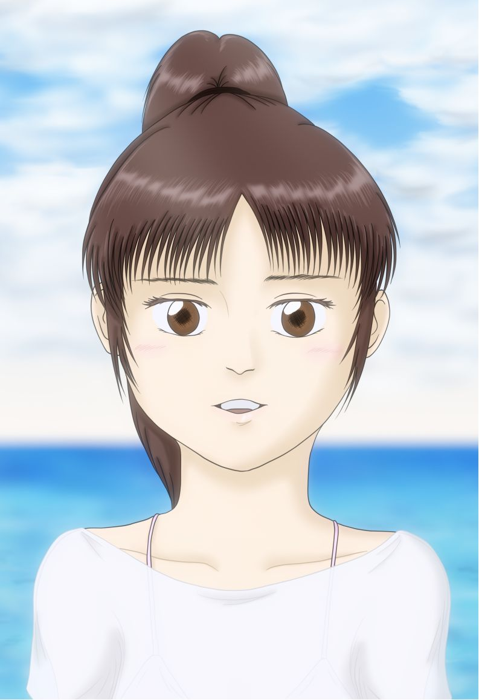

| VGM/ヴァーチャルガール・ミサキ | |
| 髙木宏紀（第３スタジオ） | |
| (2018) | |
ＶＧＭ／ヴァーチャルガール・ミサキ
目次
何もない空間に私は立っている。何もないのに立っているというのもおかしな話なのだけれど、ここはそういう空間、私のためのステージ。
どこからともなく光の筋が現れ、シルエットを浮かび上がらせていく。ヒールの高い靴に膝上まで露出した、すらりと長い足。ふわっとした拡がりを見せる丈の短いスカート。キュッとしたくびれの脇腹から、対称的に豊かに膨らんだ胸へと、起伏のついたボディライン。足と同じようにすらっと伸びた手から腕、肩から首筋へのラインは、シンプルな素肌の曲線を描いている。その先にはシャープなラインの顔立ちと、その印象をより際立たせている、ボリュームのある前髪とポニーテール。私が自分で言うのも何だけれど、あざといくらいにセックスアピールが強い姿だと思う。その両手に少しの力を込め、浅く息を吸い込み、緊張とか不安とか、そういった感情を全て押し殺して、歌い始める。何もない空間に残響も何もないはずなのだが、歌声がステージに響き始めた。
ひとフレーズ歌い終えると、背中から後押しするように正確なビートでドラムとベースのリズムが刻まれ始め、それに合わせてふたつめのフレーズを歌い続ける。やがて右に左に、あちこちの方向からギターやシンセの音が重なっていき、混ざり合う演奏は、徐々にスピード感を増していく。光の筋もそれと同様に折り重なっていき、ステージ上の私を照らしていく。
何もない空間に暑いも寒いもない筈なのに、ステージ上のひんやりとした感覚と、光の筋が肌に当たって感じる熱さを、感じ始めている。衣装の重みは感じているはずなのに、まるで全身裸で光に当てられて、灼かれているかのような気分。そう、この感覚だ。もう何度味わったかわからない、『私は誰かもわからない、多数の目に見られている』という感覚。ダメだ、今恥じらいの表情を見せてしまっては、歌の内容と全く沿わない事をしてしまう。違う、苦痛の表情も見せてはダメだ。この歌は希望に満ちた、自信に満ちた、『私を見て！』という表情を見せなければならない。私は人を楽しませる、喜ばせる為の仕事をしているのだから......。思考を遮断して、音楽に流されるままに体を預け、歌い続ける。
演奏は歌のサビに入った。スポットライトが一段と激しく灼き尽くそうとしているような感覚が、肌を刺し続けた。体の至る所から汗が噴き出して、肌から衣装へと流れ落ちていく感覚が伝わってくる。激しくなる呼吸と鼓動が、私の感覚を奪おうとする。何度も消えそうになる意識を、無理矢理体を動かして呼び戻そうとした。『やめて......これ以上見ないで......お願いだから......』どこにあるかもわからない『目』に向かって、祈るような気持ちで耐え続けた。最後のフレーズに入り、もう少しで終わる。そう思った瞬間、心から解放された気持ちになり、得体の知れない『目』へと、力を振り絞って声を上げる。
目を閉じて虚空を見上げ、私は全ての動きを止めた。
＊＊＊
「よろしくお願いします！」
あのプロモーションビデオを撮った時から一ヶ月くらいが経っただろうか。今日はその新曲発表後のインタビューで、生中継らしい。喫茶店風の空間、柔らかい照明と小綺麗なデザイナーズチェア。私以外には誰もいない事と、撮影用のスポットライトがある事を除けば、なかなかいい雰囲気の空間だ。デザイナーズチェアに足ごと乗っかって、馬乗りの様な姿勢で座る私。マネージャーの舞子さんに「そっちの方がウケがいいから」と言われたからそうしているのだけれど、人からインタビューを受ける時にそんなナメた態度でいいのかと、個人的にはちょっと不満に思っている。そもそも今日の私はショートパンツに簡素なシャツ一枚の姿。まるで自分の寝室で過ごしているかのような衣装で、男性ファンを狙いにいってるとしか思えない。歌う時の『着せられている衣装』とでもいうべき姿に比べたら、随分と気楽ではあるけれど、これはこれで『人に見られている』事を意識してしまう。そんな余計な事を色々と考え始めていると、姿を見せないまま男性インタビュアーが、軽快なＭＣを入れてきた。
「さて、今回は新曲を発表されたＶＩ（ヴァーチャルアイドル）、青山美咲さんに生でインタビューさせていただきます。私が若い頃はリアルアイドルの全盛期でしたが、いやー、ＶＩへのインタビューが映像付きで生中継できるようにまでなっているとは、驚きですねー。それでは美咲さん、よろしくお願いします」
渋い落ち着いたトーンが、印象的な声だと思った。話の仕方も私を立てつつ、自身のキャラクターも立てている。一発で百戦錬磨の『話のプロ』だと感じた。
「さて、美咲さんは第３世代ＶＩの中でも特に今注目されていますが、自分でもその意識は持っていらっしゃいますか？」
「そうですね。ちっちゃい子からお年寄りの方まで、私の名前を知っていただけるようになってきたと思います」
「あなた達第３世代の活躍ぶりは、アイドルの時代復活とも言われていますが？」
「例の事件以前のリアルアイドル、それに第１世代、第２世代のＶＩが積み上げてきたものがあって、私たちの今があると思いますので。私や私達第３世代だけの力ではないと思っています」
「芸能界ではもはや耳にタコができるくらいいつも話題にしているような事ですけど、ＶＩが普及するきっかけにもなった『例の事件』、アイドル大規模殺傷事件を発端としたリアルアイドルの活動自粛と衰退、そして数年前に起きた第１世代ＶＩの引退騒動に関しては、美咲さんはどう思われていますか？」
「犯罪防止の観点や技術の進化で失われていったものがあるのは仕方がない事だと思います。今の自分に何が出来るか、残せるかっていうのは、私も考えたりしますけど」
「そうですね......ちゃんとした意見を持っていらっしゃるようで、驚きました。ＶＩにはスケジュールというものがきちんと存在するそうですが、美咲さんにはオフの時間というものはあるんでしょうか？」
「今回のような生中継やライブは同時には出来ない事になっていて、例えば北海道でライブをやった後沖縄のイベントに参加する、なんていうケースでは、移動時間に相当する間の時間には予定を入れられないんです」
「たまにある空き時間には私のイメージビデオなど、既に発売されているコンテンツに『生』の私がアドリブでお相手させていただく事があります。これはランダムなので、是非何度も再生して楽しんでいただきたいですね」
「さりげない宣伝、ありがとうございます。商売上手ですねぇ、美咲さんは」
「それはまぁ、私も『売り物』ですから......でも、一度でいいから体験してみたいですね。ＶＩではない普通の人の普通の暮らしも。部屋で寝て起きて、食事して。散歩に出たりとか一日趣味に没頭したりとか。旅行なんてのもいいですよね」
「んー、でもＶＩって実際の空間に立てるのって、ライブ会場とかスタジオとか、限られた空間だけだっていう話ですよね。さすがに無理なんじゃないですかね...」
「......」
インタビュアーにとっては何気ない返答が、妙に私には重く突き刺さってしまった。さっきは自分で言ってしまったが、やはり私は『売り物』でしかないんだろうか......。
「さて、今回の新曲に関してですが、美咲さんとしては挑戦の部分もある曲だと思うんですが、ご自身ではどう思われていますか？」
相手もプロだ。私が不快に思う質問に踏み込み前にあっさり話題を切り替えてきた。こちらもそれに応えなければならない。
「そうですね......」
＊＊＊
インタビューを終えたスタジオは喫茶店風の空間だった風景から、殺風景な緑色の壁が四面に広がった空間に変わっている。私がいる間くらい、そのままにしておいてくれたらいいのに......。その場に立ち続けていると、奥の扉を開けてマネージャーの舞子さんがやってきた。浅宮舞子、彼女はヒールの靴にロングスカート、ブラウス姿で少し大人びて見え、実際の年齢も私の設定よりは少し上だが、顔つきや体つきは私とかなりそっくりな部分が多い。第３世代ＶＩは皆、モチーフとなる人物がマネージャーとなって二人三脚でやっている。犯罪防止の観点でマネージャーの個人情報は保護されているっていうのも、何度か聞かされている。
「美咲、どうしたの。さっきの発言。普通の暮らしがしてみたいなんて急に」
声も似ているのは、舞子さんも嫌だろうなって、初めの頃は思っていたっけ。
「別に......ファンの人達へのリップサービスみたいなものだから。現実世界への憧れみたいな事、言っておいた方が私っぽいかなって」
「そう......今日はもう生の予定ないから、現実世界は無理だけど、起動中のプログラムに付き合って反応するのはＯＫだから」
「わかった」
「明日の予定は大丈夫よね」
「えぇ」
「それじゃ、疲れるって概念があなたにあるのか私もわからないけど、そう思ったらちゃんと言うのよ」
......彼女も私とどう向き合っていいか、ずっと手探りなのを感じている。なまじ私が人とそっくりな反応をする事に、物として向き合っていいのか人として向き合うべきなのか、迷っているんだと思う。そういえば、舞子さんが何故私のモチーフとしてマネージャーになる道を選んだのか、聞いた事ってなかったかも。性格も私とそっくりであるだろう事を考えると、少し想像はつくけど。
「うん。舞子さんこそ、私が忙しくなって来てるけど、大丈夫？」
「そんな事、あなたは気にしなくてもいいのよ。自分の事だけ気にしてなさい」
「......」
反論をしてもお互いの為にならないと思ってしまった私は特に言い返しもせず、その場でメニュー画面を出して操作して、この場を後にした。その姿を見届ける彼女の表情は、少し複雑で私には判別がつかなかった。
２１世紀半ば、夏の終わりの東京・吉祥寺、週末の夜。駅の改札前では、家路を急ぐ人々の流れや、待ち合わせをしている学生のグループなど、多くの人々が行き交っている。それらの人々が行き交う頭上や壁面に並んでいるデジタルサイネージには、女性歌手のプロモーションビデオが映し出されている。演奏の終わりと共に『ＶＩ青山美咲 新曲、配信にてリリース』との文字が現れ、画面は無機質な空間から喫茶店を想像させる現実にありそうな空間へと切り替わっていった。画面の端には『Ｌｉｖｅ』のバナーが表示されている。
そんな騒々しい場所で自分は立ち止まり、携帯端末でメッセージの着信を確認した。職場の部下から来た連絡で、その内容に躊躇していた。
『お疲れ様です。エターナルストーリー Ｅパートのカット１１２０、ヒロインのマヤが主人公マックスの無事に対して微笑むカット、先程のチェックでＯＫが出たテイクですが、監督から今になって、もっと表情を良くしてほしいというリテイクが出てしまいました。対応相談させて下さい』
良くってなんだよ良くって。具体的にどこをどう直すって言ってもらわないと、伝わらないんだけどな......。一方的にやってきた不慮の出来事に対して、思わず愚痴が浮かんだ。職場に戻るかそのまま帰るか......迷っていると、デジタルサイネージに映し出されている女性、ＶＩ青山美咲の姿が目に入った。
「んー、でもＶＩって実際の空間に立てるのって、ライブ会場とかスタジオとか、限られた空間だけだって話ですよね。さすがに無理じゃないんですかね...」
「......」
「......さて、今回の新曲に関してですが、美咲さんとしては挑戦の部分もある曲だと思うんですが、ご自身ではどう思われていますか？」
やり取りの中でインタビュアーがＶＩの彼女に対して『地雷を踏んだ』と思って、一瞬で話題を変えた事が、妙に印象に残った。彼女にとって今、自由に行動できない事はきっと不満なのだろう。発言に対して返事ができないでいるその微妙な表情に、自分は強い印象を持った。そして、昔密かに応援していた、第１世代ＶＩの事を思い出した。彼女達には『自由に行動したい』といった欲求や、本人の感情があるようには感じられなかった。そして、仕事に向き合っている今の自分も、考えて何かを決断したり、感情を表明したりするような事もない、同じようなものに感じてしまった。しかし、目の前のモニタ越しに見ている彼女は、華やかな世界で活躍し、作り物でありながらも思考というものが存在し、どうにもならない事への抵抗とも諦めとも判別のつかない表情を見せているように、自分には見えた。今の自身の状況と重なった事が偶然でないように思った事が後押しして、職場に戻るのは無駄だと諦めて開き直り、そのまま駅の出口へと向かった。
＊＊＊
駅を出てからいつもの道を歩いて二十分程の、井の頭公園を抜けた先にあるアパートへと、自分は帰ってきた。
帰宅時の反射的な癖でポストを雑に開け閉めして、中に何もない事を確認すると、階段を疲れた体でゆるゆると登っていった。財布から鍵を取り出して自室の鍵を開け、部屋へダラっと入っていく。いつも夕食は済ませて帰ってくるので、あとは寝るだけ。これまたいつものように出しっ放しの布団に直行......となりかけた所で、いやいやこのまま仕事して帰って寝て終わりの一日にしてなるものかと思い直し、気分転換にと床に放っておいたゴーグル型のモバイルデバイスを付けて、ビデオチャンネルを眺め始める。
いくつかの押し付け的に勧めてくるアニメやドラマのＣＭインデックスが並んでいる。毎週チェックしているような番組を今夜はパスして、何か刺激的な出会いが欲しい......そう思いながらインデックスを送っていく中で、「ＶＩ青山美咲イメージビデオ」のインデックスで操作を止めた。さっき駅のデジタルサイネージで見た子だ、と思い出し、暫くそのインデックスにカーソルを合わせたまま、手を止めた。
自分はまた、第１世代ＶＩの『ユイ』や『リナ』の事を思い出し、そこから先の行動に躊躇した。自分達の世代の男性は中高生時代に多かれ少なかれ、人にはファンである事を告げずにこっそりＶＩの曲を聞いたりグラビア画像を保存したりといった少し恥ずかしい思い出を持っていて、同年代の男だけの集まりがあると、自然とその話題になった。自分もご多聞に漏れず、『隠れ第１世代ＶＩファン』だった。しかし、社会人になって仕事が忙しくなってからというもの、ＶＩのコンテンツや出演する映像作品を見ている暇もなかった。遠い存在になっていた自分にとってＶＩは、過去の甘くて苦い思い出を揺り起こす諸刃の剣なのかもしれなかった......。それでも、先程あれだけ豊かな感情を見せていた目の前の『美咲』と呼ばれる少女に、自分は一目惚れともいうべき、特別な感情を抱きつつあった。
「いやいや、この年になってＶＩもないだろ。いくら全然彼女ができないからって、なぁ......」
誰に言うでもなくぼそっと口にするが、言葉とは裏腹に『スタート』のアイコンを選択し、自分は少し恥じらいの気持ちのある緊張を、久々に味わい始めた。
やがて、視界に海岸の風景が展開されていく。そこにヒールのサンダルにショートパンツ、丈の長いオフショルダーのシャツに、彼女のトレードマークと思われるポニーテール。そんなラフな姿の美咲が現れる。シャツの下からはビキニの水着がのぞいている。
視聴者が美咲の恋人で、二人で海水浴場にやってきたという設定らしい。男性目線では少し刺激的な美咲を、じっくり直視していいものか迷いつつ、おそるおそる何度か彼女に目線を向けてみる。
「！」
プログラムの彼女が自分の行動に沿った言葉をかけて来ている事に、驚いた。何か言い返すべきなのか躊躇していると、やがて彼女の表情が不満顔になっていく。
「ねぇ、どうなの？別にじっくり見られたって私、怒ったりしないけど？」
まるで自分の行動に対して反応しているかのような言動に少し驚きつつ、それではと、今度はまじまじと体を見回した。
「......なんかヤラシイ。まあいっか。それじゃ、行こっか」
表情を戻した彼女とカメラが、前に進み始める。
「ここ、なかなか穴場だと思わない？ちょっと時間かかるけど、来て良かったでしょ？」
「今日は早起きして昼ごはん作って来たんだ、後で一緒に食べようね」
恋人気分を味わわせてくれる、ベタだけどなかなかニクい演出だなと思って眺め続けていると、また次第に彼女の表情が不満顔に変わっていった。
「ねぇ、さっきからずっと私が話しかけてるのにさぁ、どうして何も言ってくれないの？」
「？？？」
再度ドキッとさせられる問い掛けをされて、驚く。またやけに巧妙なシナリオだなと思って眺めていると、更に絡んでくる。
「もしもーし、そこのあなたの事なんですけどー」
「え、僕......？」
思わず口に出して反応してしまうと、彼女が返事をしてきた。
「！！」
自分の言葉が向こうに届いている？何がどうなってそんな事が実現されているのか、思考が至らず驚きを隠せないでいる間も、向こうは会話を続けてくる。
状況を理解しきれないまま、会話を続けてみる。
「ＶＩについてあまり知らないようね。『生』の本人の予定が空いてると、アドリブで相手する事があるんだよ」
さも当たり前かのように、解説を入れてきた。
「へぇ、そんなオプションがあるんだ」
「オプションって...夢がないなぁ」
「そうかな？」
「私の事ちゃんと知ってる人達は、私に合わせて彼氏役を演じてくれたりするのに」
技術の進化に感心していると、彼女の方も何かいつもとは違う事態に遭遇したようで、びっくりしたような声を上げてきた。
「どういう事？」
「そっちがＯＫなら私そっちに行けるみたい。ホントかなぁ。ねぇ、そっち行ってもいい？」
本当にそんな事が出来るのだろうか......既に会話が成立している時点で事態に付いていけず、どう返事をしてよいものか、即時に判断ができなかった。
「どうなの？私に来て欲しいの？ちゃんと返事して！」
彼女が凄んで迫ってくる。
よくわからないまま返事をしてしまうと、彼女はそれまでいた海水浴場の風景から、姿を消していた。
「よ......っと、うわー、本当にこっちに来ちゃった。すごいすごーい！」
それまでの正面から何かを通して聞こえていたような声が、左から直接聞こえてくるようになった。半信半疑になりながらゴーグル型デバイスを外すと、そこには彼女の姿があった。
「よ......っと、うわー、本当にこっちに来ちゃった。すごいすごーい！」
今までライブ会場やスタジオ、ロケ先で立たせて貰った事はあったけれど、本物の人の部屋にお邪魔したのは初めてだった。天井の灯り、白い壁、ベランダに続くサッシ、その向こうに見える家々、足の低いテーブル......一人暮らし用のワンルームらしい。生活感ってこういう事なんだ。おっと、いきなり初対面の女の子の私が、男の人の部屋にお邪魔してジロジロ見回すのって、相手の人には凄く失礼か。まずはちゃんと、ご挨拶せねば。
「どーもー、青山美咲でーす。ＶＩやってまーす。年は３......じゃなかった、１６でデビューして、今は１９才って事になってまーす。あの、ここってあなたの部屋なんですよね。私、誰かの部屋に来たの初めてで、ちょっと今、何をどうしたらいいのかノープランなんですけどぉ......」
「......」
ヤバい、引いてる。初対面でこのノリは、軽すぎたか。この人、私の事あまり知らなかったみたいだし。
「ん、ん。すみません。ヴァーチャルアイドルの青山美咲と申します。今回はお招きにあずかり、誠にありがとうございます......」
「......あの、そういう事じゃなくて」
「はい？」
「いや、おかしいですよ。ＶＩのイメージビデオ見てたら本人が直接やって来るって......」
こちらが戸惑っている以上に、向こうは混乱しているようだった。そりゃそうか。私と会話が成立しだした所から既に、戸惑ってたし。オロオロしている目の前の男性は見た感じ、舞子さんと同じかそれより少し年上の印象だった。データベースから顧客情報を引っ張ってきても良かったのだが、一旦はこの人本人から直接聞きだせるだけの情報で、まずはやり取りしてみるか。
「『ユイ』だって『リナ』だってアレですよ、ＰＶでずっと仏頂面で歌いやがってってみんな文句言ってたくらいなのに、イメージビデオで返事が返ってきた時点で既にビックリなのに、部屋にまでやって来るって、どうなってるんですか、これ」
「すみません......ついこっちで勝手に盛り上がってしまって。それにしても凄いというか」
私が驚く余地もなく向こうが変なテンションになってる。第１世代直撃世代らしい反応というか......ちょっとこっちが付いていけないんですけど。
「私も何でなのか、実はよくわからないんです。そりゃ確かにさっき、普通の暮らしがしてみたいとか、言っちゃったりはしたんですけど」
「でも、そんな希望をポロっと言ったら叶っちゃうなんて、おかしくないですか？今まで一度も自由時間とか無断外出とか、認められてないしやり方もわからないし、そもそもマネージャーの舞子さん以外ビジネストークしかした事ないし。いきなり何で？何でなんですか？」
「い、いや......こっちが聞きたいんですけど......」
言いたい事は言い返してやったし、ここからは実地調査に移りますか。
「......っと、それはともかくとして、折角来たんでお部屋、じっくり見させて貰ってもいいですか？」
「えっ？ま、まぁ......個人情報に抵触しない範囲でなら......とりあえず、座れる場所作りますね」
そういえば私達、立ったまま話してた。彼はまだ心ここにあらずな様子だったが、ぎこちない動きでテーブルの周りに散らばっているチラシやら本やらを片付け始めた。
「ちょっと散らかってますけどここ、どうぞ」
「それでは改めて、お邪魔します」
低いテーブルの前に座り周囲を見回していると、目の前の彼が自己紹介を始めた。
「中井翔太。２９才ＣＧプロダクション勤務、来年公開予定の、まだ明かせない映像作品に関わってます。一人暮らし、未婚。隠れ第１世代ＶＩのファンでした、ってこんなくらいでいいですか、個人情報の開示」
「これはご丁寧にどうも。男性の一人暮らしにしては綺麗ですよね。比較のしようはないんで、印象だけで言っちゃってますけど」
「んー、このままだとツッコミどころがなくてつまんないなぁ......あっ！クローゼットの中、覗いていいですか？」
男の人ってベッドの下とかクローゼットに、Ｈな本とか見られたくない物隠すって言うし、普段は見えない所にこそ、その人の秘密あり、だよね。多分。
「鍵とかかけられてる所以外は、自分で開けられるはずですよ。私も原理とかまではよくわかってないんですけど......っと」
私は立ち上がってクローゼットの前まで行き、以前ロケ先でやってみたように、扉に手を触れてみた。ちゃんと感触があり、取っ手に指をかけて引いてみると、クローゼットの扉が開いた。
「うわっ、本当に開いた」
「どれどれ......」
クローゼットの中は、服以外にも冬用の布団とか機材の箱とか、色々と埋め尽くされていた......期待していたアイテムは無かったけど。
「んな無茶な」
よくよく部屋を見回してみると、ちょっとＨな衣装をした女の子のイラスト集や、昔のリアルアイドルの写真集なんかが床に平積みされていた。んー、隠すまでもなくこの人、ソフトエロ路線の趣味は隠してなかった。変に潔くてつまんない......クローゼットの扉を閉めて元の座っていた場所に戻りつつ、私は次の『検証』を彼に提案した。
「扉が開けられたってだけじゃ、まだ私が何をどこまで出来るかわからないですよね......次行きましょう。試しに私に触ってみてもらえますか？」
一方的に付き合わせてしまっていいんだろうか？まあいっか。嫌なら真っ先に帰れって言われてるだろうし。
「さ、触るって、どこに？」
「今Ｈな想像しましたよね？」
「......べ、別に......」
ちょっと揺さぶってみたら、あっさり恥ずかしがっちゃって。なんかこの人、２９って言ってたけど精神年齢は私と大差ないのかも、反応が子供っぽい。
私は右手を彼に向けて出し、人差し指を突き出した。彼の震える右手が恐る恐る、私に向かって差し出されると、同じように人差し指を突き出してきた。
向こうにとってはすっと指を出してきたつもりなのだろうけど、こちらには強く押された感触となって伝わり、思わず声を出してしまった。慌てて彼が手を引き、申し訳なさそうな顔をこちらに向けてきた。
彼が無言で頷く。
「私には感じた。あなたの感触。あなたに好きにされ放題って事ですよね、コレ？」
予防線を張っただけのつもりが、それ以上に警戒させてしまったかもしれない。彼は過剰にドキッと反応した後、ジリジリと私を避けるように後ずさっていった。
「でも、もしあなたに押し倒されたら、私潰れて死んじゃうのかも......」
何言ってんだろう、私。ちょっと煽り過ぎたかも。彼が激しく焦り始めていて、顔から汗がにじみ始めている......。
「なーんてね、そういう時には私がするっと逃げられると思うんで、心配しないでくださいね」
私は不必要なくらいの笑顔を、彼に返した。すると彼は、真面目な顔をして切り返してきた。
「あの......質問として合ってるかわからないんだけど、聞いてもいいですか？」
「これって、君が僕に対するサービスを提供する為に僕の部屋やってきた、っていう認識で合ってるんですよね？」
「そうだと思いますけど、なにぶん私も初めてなので......あとできれば、もう少し夢のある表現にしてもらえるとありがたいかなぁとも思うんですけど」
「今の所そっちが僕の部屋調べたり実験を求めたりしてるだけで、完全に僕、実験台になってませんか？」
「......んー、私の外出を許可した人達の意図が私にも共有されていないので、その辺は何とも......それで、あなたは私に何をして欲しいんですか？」
「そう言われると何がどこまでできて、何がＯＫなのかもわからないので、困りました。万が一自分に彼女ができたら何をしてもらいたいかって、あまりに縁がなかったんで想像した事もなくて。まがりなりにもＶＩの君だから、Ｈな事は全部ＮＧなんですよね？」
「さっきのビデオの流れからして、そうじゃないですか」
「えっと......それじゃ、君が思う、彼女が恋人の男性にしてあげる事を、してもらえますか？」
それまでとても従順なペットのような印象だった彼から、思わぬ発言が返ってきた。
「イヤ、だから、あなたが思う恋人ごっこ。自分は思いつかないので」
「何で丸投げなんですか？あなたそれでも男なんですか？」
「そのまま返すけど、君はそれでもＶＩなんですか？人を楽しませる、喜ばせる職業なんですよね？ＶＩって」
あの......私、今そこで悩んでるんですけど......ってこの人に打ち明けるのはお門違いか。
「何でそこで言い澱むんですか。君の先輩である第１世代はその辺、最初はそりゃ無表情だったかもしれないですけど、徹底してましたよ」
「そりゃ、僕にとってのアイドルは第１世代ＶＩですから」
「それで、人を楽しませたり喜ばせたりする事に関してプロである、君のプランを聞かせて貰えますか？」
「なんで面接みたいになってるのぉ？」
「さぁ！」
この人、気が弱いんだかそうじゃないんだか......よくわからない。
「そりゃ、私は歌ったり踊ったり、後は話しとか演技とかが武器ですから、そういった事で恋人役のあなたを楽しませるっていうのは出来るんじゃないですかね」
「具体的には？ここはステージじゃない隣との壁も薄いような部屋ですから、普通に歌われたり踊られたりしたらアウトなんですけど」
「何よ、別にいいじゃない。私が相手してあげるんだから、ひと晩くらい騒いだって」
「ダメです。もっと現実的な、ちゃんとした恋人らしいプランをお願いします」
「ひっそりとあなたを楽しませるって、どうしたらいいのよ......」
言葉を発しているうちに、邪な想像が頭を支配してしまった。
「今なんか思いつきましたよね」
「そこから先も聞くの？」
「当たり前です。僕の仕事はプロジェクトマネジメントですから。君のプランを正当に評価するには、実行内容の全てを話してもらわないと」
「至って真剣に、君のサービスを評価しようとしてるんです」
「只の仕事バカだ......んー、疲れた。休憩休憩。中断！」
ダメだ。この人、まともに相手してたらやってらんない。
突如として部屋に現れたＶＩ、美咲。彼女はすっかり部屋のお客様状態で居座っているが、時間になったら帰る気はあるのだろうか。そもそも人の部屋に来たのも初めてだって言ってたし、自力で元いた場所に戻れるのだろうか。『もしあなたに押し倒されたら』なんて事を言われて少しその気になって焦ってしまい、無理矢理話を適当に逸らしてみたが、冷静になって考えてみたら、その事について聞かない訳にもいかない。
休憩休憩と言われて無理矢理会話を止められてから、彼女は部屋にある『ちょっとＨなイラスト集』を床に広げると、寝そべって黙々とページをめくり始めていった。自分の目の前で女の子にそれを読まれるのは、無茶苦茶恥ずかしかったのだが、彼女はページをめくる度に、表情をコロコロと変えていく姿が印象的で、気が付くと彼女に見入ってしまっていた。まるで『この子、すっごくカワイイ！』とか『この衣装とポーズ、ありえないんですけど』といった言葉を発しているかのような、彼女の表情の表現力の高さに、自分はただただ感服してしまった。
一冊読み終えかけた頃に、自分は彼女に話しかけた。
「今まで自由時間がなかったみたいな事を言ってたけど、時間は大丈夫なの？あと、自力でちゃんと、元の所には戻れるの？」
「......ねぇ、王女様が宮殿を抜け出して、一日だけ自由に過ごすって話の映画あるでしょ？私、あんな感じで一日暮らしてみたいんだけど、ダメかな？」
一瞬だけ彼女が憂いのある表情を見せたのが妙に印象として焼き付いたが、同時に別の事も頭に浮かんだ。そもそも一時間そこらの娯楽のつもりで見始めたビデオが、はぐらかされた上に一日拘束に勝手にランクアップしようとしている。いやいやいや、これってこちらの予定完全無視の、押し売りじゃないか。オプション料金とか、取られるんじゃないか？そりゃ、こっちは明日仕事休みだし、プライベートの予定もないけど......これって確信犯か？確信犯の売り込みなのか？
「王女様とＶＩじゃ随分と違いがあると思うけど......百歩譲って君が王女様みたいなものだとして、お相手を引き受ける自分に、何かメリットはあるの？」
「見返り必要なの？私みたいなアイドルと一緒に居られるだけでもう最高！ってならない訳？」
ほらやっぱり。モテない男だと思って上から目線で押し付けてきやがって。今時のメディアはこんな所にまで付け入って商品を押し付けてくるなんて、一体なんなんだ。
「いや、仕事上がりのちょっとした暇潰しのつもりで見てただけだし、そもそも君の映像見たのも初めてだし......そりゃ、見た目は好みのタイプではあるけど（小声）」
「なんか目がヤラしい......」
「生まれつきこの顔です」
「はぁ......何でこんな人の所に来ちゃったんだろ」
「だったら帰れば？」
「......帰らない。帰れって言われても帰らないから」
クーリングオフ不可ですか、そうですか。とんでもない悪徳商法に引っ掛かった気分だ。そもそも彼女の問いかけにＯＫした時、サービス内容も金額提示もなかったし......。面と向かって『帰れ』と命令したら、お帰り頂けるんだろうか。でも、『一日暮らしてみたい』と言った時に見せた表情の記憶が、その決心を鈍らせている。相手が自分だという事は偶然だったとしても、彼女が誰かの元に送り込まれた事自体には何か意味があるようにも思った。それに、既に自分は彼女の魅力に引き込まれてしまっているような、そんな気もした。自分の選択肢は、追い出すか受け入れるかの二択しかない。例え売り物のＶＩだろうが、あんな表情を見せてきた相手を、誰が放っておけるだろうか。
「わかった。ひと晩、好きにしたらいい」
「うん......ありがとう」
こういう安心した時の表情の良さにも、思わず心を揺さぶられてしまう。
「寝る前だったんでしょ。私の相手長くさせちゃってゴメンね。私、どこで寝たらいい？」
「スケジュールがちゃんとあるんだから、睡眠時間だってあるわよ。深夜に活動したら、次の日は昼まで休み」
ん？自分の部屋はワンルーム、布団は自分用がひと組、彼女は帰らないと言っている。どうしたらいいんだ？？？こちらが戸惑っている様子に、彼女が気付く。
「まさか、お客様に台所の床で寝ろ、とか言うんじゃないでしょうね？」
「そんな事言ってないでしょ」
「布団は残念ながら、ここにあるひと組しかないんですけど......」
「......」
「......」
二人で同じ布団に寝るしかない、という結論に脳内で至り、余計な空想が回り始める。
変に察しがいい......。
「それじゃ、君が使って」
「わかったわよ、あなたが使って」
ほぼ同時に譲り合う言葉が飛び交った。相性がいいんだか悪いんだかわからない。
「......」
「......」
その後黙りこくってしまうところまで歩調が合ってしまった。このままでは話が進まないと思ったのか、彼女が先に提案してきた。
「ここはあなたの部屋なんだから、あなたが布団使って。私は壁にでももたれて寝るから」
「あんまり変な気を遣わないで。こっちが押し掛けてるんだから」
「はい、この件終わり。私がそれでいいって言ってんだから、それ以上蒸し返さない」
彼女のこういうカラッとした性格は、羨ましく思う。内心では色々な事を抱えていても、普段は他人の事を優先して、自分の不安や不満を表に出さない、それが彼女の生き方みたいなものとして、既にあるのだろう。自分は立ち上がると、クローゼットからパジャマ上下を探し出し、布団の上で着ている服を脱ごうとし始めた。
何の気なしにそのまま着替え始めようとすると、彼女が顔を真っ赤にして怒り始めた。
前言撤回。感情のある相手って、やっぱり面倒だ......。
＊＊＊
結局自分が部屋から追い出され、狭い台所で着替える羽目になった。部屋に戻ってくると、彼女はビデオから出てきた衣装のまま部屋の隅で壁にもたれて座っていた。水着下に着たまま寝るの？とは思ったが、本人に突っ込むとまた『Ｈな事考えてる』とか何とか言われそうな気がしたので、言及しない事にした。
「はぁー。何でこんな、私のファンでもなければ、お金持ちで気前が良さそうな所も全くない、普っ通に生きてるような人の所に来ちゃったんだろう......」
普通にこっちに聞こえるような声で愚痴をこぼしている。変な期待なんかせずに、やっぱりとっとと追い返すべきだったか。
「......」
何で押しかけて来た相手に、こんな悪口を堂々言われなきゃならないんだ。自分は無言でわかりやすく不機嫌な顔を、彼女に返した。
「あ、ごめん......。ひょっとして一番言われてほしくない事、言っちゃった？私、いつもファンの人にはちゃんと気を遣ってるんだけど、こういうシチュエーションって初めてで。一緒にいる相手にどこまで本音を言っていいか、わからなくて」
恋人でも何でもない自分と彼女が、いきなり成り行きで二人きり。それだけで十分に滑稽な光景なのに、しかも彼女は実態が中途半端なＶＩだ。考えても仕方ないと割り切る事にした。布団に入り、どちらを向いたら良いものか暫く悩み続けたが、背を向けてそのまま寝てしまうのも何かドライすぎる気がして、彼女の方へと顔を向けてみた。目線が合うと、お互い少し気恥ずかしくなって、目を逸らした。照れ隠しからか、彼女が話しかけてきた。
「やっぱりこんなんじゃ、彼氏と彼女の関係からは程遠いよね？」
「そりゃ、実際そうじゃないし......」
「さっきの話の続きじゃないけど、私やっぱり、あなたの恋人をひと晩演じてみようかなって思うんですけど」
「......」
「今夜私を泊める見返りだって、あった方がいいんでしょ？」
話の腰を折る為に使った方便のつもりが、蒸し返された。さすがにこの状況でそれを言われては、理性がもたないかもしれない。彼女が目を合わせないまま、四つん這いになってこちらに向かってきた。
彼女に背を向けながら、言い返す。
「私にとっても、知識だけじゃなくて経験としてあった方が、いいのかもしれないし......」
「だから、無理しなくっていいって。僕の事、何とも思ってないんだろ」
「だって私ほら、プロだし......あなたの事気持ちよくさせるくらい......楽勝なんだから......」
自信なさそうな言い方も、彼女の作戦のうちなのだろうか。一度は振り払ったはずの妄想が頭の中を占拠しだして、整理がつかなくなってきている。こんな形で......彼女の慰めを受けていいのだろうか？
「今、すごくドキドキしてるの、ステージに立ってる時以上に......まるで自分じゃないみたい......」
彼女はそう言った後、背後で何かモゾモゾとした後、耳元でささやいてきた。
「ねぇ......目を閉じて......想像して。今から私なりに、頑張るから......」
そう言うと、彼女が言葉になりきらない声を上げた。
まるで自分が彼女を汚しているかのような、錯覚を覚える。
「んん......はぁっ......ぁっ......ぁっ......」
「......っ！」
歌声とはまた違う彼女の魅惑的な音色に溺れかかった刹那、目を見開いて振り向き、完全に当てずっぽうだったがその唇を塞ごうと試みた。
近い。間近で見つめ合う形になり、恥じらいの気持ちが頂点に達して、どうにも落ち着かせる事ができない。
「......男の人を気持ちよくさせるって、こういう事じゃないの......？」
その声は、消えそうなくらいに弱かった。
「僕は君に......そんな事を求めているわけじゃないんだ......お願いだからやめてくれないか......」
それだけをなんとか伝えきると、無造作に出した両手を下ろした。
「私......恋人同士の付き合い方なんて......よくわかんないよ......あなたもそうなんでしょ......」
彼女はそう呟くと、顔を背けてうな垂れた。自分も言葉が浮かばず、それ以上彼女を見続ける事ができなかった。恋人の真似事をしようにも、自分達はお互い何も知らない子供すぎたのかもしれない。
＊＊＊
１、２時間くらいの時が経っただろうか。お互い特に確認も取らず背中合わせになり、一度はこのまま眠ってしまおうとしたものの、彼女をこのまま朝まで放置しておいてよいものか悩み続けてしまい、深い眠りにつくことが出来なかった。彼女も同じ気持ちだったのか、時折ガサゴソと布団が揺れる音が聞こえてきた。返事が貰えるかわからなかったが、自分は彼女に背を向けたまま問いかけた。
「......まだ、起きてる？」
「うん......」
反応があった。口も聞きたくないくらいに怒ってはいない、って事だろうか。折角出来たきっかけだ。まずは謝らないと。
「さっきは......すまなかった。君なりに考えてしてくれた事だったのに、一方的にやめてくれなんて言ってしまって」
「最後に言われた通りなんだ。僕は恋人同士の付き合い方が、よくわかってない」
「いや、君は人生経験自体が少ない中でも自分で判断しようとしていた。ずっと向き合ってこなかった僕とは違う」
「そうなのかな？」
「えっ？」
「私とあなたって、見た目の年は離れてるし、実際生きてきた時間も違う。でも、同じなんじゃないかなって。実は出会ってすぐくらいから思ってた。あなた、すごく反応が子供っぽいし」
まさかこんな事を言われるとは思わなかった。いや、見た目が年下の彼女が自分について分析して直接それを伝えてくる事などないだろうという、先入観があったかもしれない。
「ほら、そういう自嘲っぽい返し方とか。言い方は子供じゃないけど、駄々っ子そのもの」
「そんな事に気が付くんだ」
「人生経験がない代わりに、知識量は豊富だから」
「だったら僕への慰め方も、他に思い付いたんじゃないの？」
思わず率直な意見を言ってしまった。思い付いた事をすぐ言ってしまうのは自分の悪い癖だと前々から意識していたのに、彼女とやりとりしていると、勝手にそれが引き出されてしまう。
「もぅ、そこ蒸し返さないで。そういうとこが子供だって言ってるのに」
「じゃあ、そんなお子様な翔太君に、仲直りのお詫びしてあげる。あなたが心安らかに眠れるように、子守唄、歌ってあげるね。歌は一応私の得意分野だし」
自分は少し調子に乗って、子供になった気分で彼女にリクエストした。
「それじゃあ、『ユイ』か『リナ』の曲、リクエストしてもいい？」
「そこ、私の曲リクエストする所じゃないの？空気読んでよね」
「だって、さっき流れてた『Ｌｏｏｋ Ａｔ Ｍｅ』しか君の曲知らないし......」
「信じらんない。自分で言うのもなんだけど、私自分の持ち歌だけでも二桁あって、結構守備範囲も広いんだよ......。はぁーあ、私もまだまだって事かぁ。わかったわよ。どうぞ」
「じゃあ、『ユイ』が失踪する直前に出した曲、『ｗｉｔｈ ｙｏｕ』で」
「あの曲かぁ......ちょっとわかるかも、今のシチュエーションで聞きたくなるの。リクエスト、了解」
そう答えると、彼女は背を向けたまま、声を抑え気味に歌い始めた。
「深い 深い 闇の中で あなたの見えない姿を探した......」
抑揚のある彼女の歌声は原曲とは少し違った印象を抱いたが、彼女なりにこの曲へ向き合った結果の歌い方だとは思った。『Ｌｏｏｋ Ａｔ Ｍｅ』を歌う彼女からは『ガラスのドレスをまとった歌姫』とでも形容したらいいような、脆くて尖った美しさを感じたが、『ｗｉｔｈ ｙｏｕ』をアカペラで歌う彼女の歌声は、初見の印象にはない柔らかさがあって、その心地良さに包まれながら、いつのまにか眠りへと誘われていた。
＊＊＊
翌朝、目覚めると彼女はまだ自分と背中合わせにして寝ていた。特に自分の行動に合わせて寝たり起きたりする訳ではないらしい。その無防備な寝顔を見ていると、ＶＩである彼女に、人としてのリアリティーを妙に感じてしまう。
「黙っていると、本当に非の打ち所がない美人にしか見えないよな......」
シャツ一枚で浅い寝息を立てて寝ている、極めてプライベートな彼女の姿に若干の興奮を覚え、思わず本音が口を突いて出てしまった。昨夜、一日暮らしてみたいと彼女に言われてから、色々とギクシャクしたり仲直りがあったりもしたけれど、今日彼女が目覚めたこの後、自分はどうしたらいいんだろうかという事を、どうしても考えざるを得なかった。そもそも彼女がここに来る事になったきっかけは、彼女のイメージビデオを自分が見始めた事からだった。そのサービスを受けているのは自分の筈で、自分が彼女を世話したり彼女に何か貢いだりするのは、行動として違う気がした。そもそも、今の自分と彼女の関係は昨夜から変わらず『客とサービス提供者』なんだろうか。昨夜から今に至るまでのどこかで、その前提はなくなっているのではないだろうか。だとしたら自分は......まだその答えが出せなかった。
彼の部屋に転がり込んできた翌朝、目覚めると既に、その姿は私の背中にはなかった。
「見慣れない天井......人の部屋にお泊まりした時の翌朝って、こんな不思議な感じなんだ」
視界の外で彼、翔太の声がした。
聞き覚えのある声に、昨晩の恥ずかしい記憶が次々と蘇る。私、あんな事やそんな事を......必然的に彼に対して、恥じらいの気持ちが湧いてきた。私は少しごまかし気味に返した。
実際の所、目覚めてすぐに誰かと顔を合わせるのは、普段見せない素の私を見られたような気がして、自然と不機嫌な気持ちになった。夫婦や家族、恋人って、そういうのを見せ合う関係なんだって、また新しい事をおぼえた気がする。
そういえば私、昨夜水着にシャツの格好のまま寝ちゃったんだ。どうしよう。今着ているもの以外の服装って、呼び出せるんだろうか......着替えられたにしても、彼の前でそれをやるのも何だし。
「そんな所まで人間と同じ縛りあるの？ってまさか、鶴の恩返し？」
とっさに反応してしまったけど、私って結構冴えてる？むしろ彼のセンスの方が問題かも。もし覗いてきたら思いっきり殴って......って私、彼に何もできなかった。私が触れる物を介してなら、彼に何か出来るのだろうか？まあ、昨夜の行動から考えたら......きっと大丈夫だよね。脱衣所もない彼の部屋の廊下で、私は着ていたシャツを脱ぎ、メニュー画面を呼び出して、昨夜着ていた服を全て回収するよう指示した。
実際にシャワーから流れる水の音や肌に触れるお湯の感触、湯気の熱気を感じたのは、ひょっとしたら生まれて初めての事かもしれない。いつもライブやロケで汗をかいたり汚れたりした後に浴びる事ができたシャワーは、あくまでも情報としてのイメージでしかなかった。そのイメージだけだったものが今、よりリアルな感覚として再生されているような気持ちになった。実際にシャワーのお湯は、原理的にはどうなっているのか私にもさっぱりわからないが、昨夜クローゼットの開け閉めができたのと同じように、ちゃんと私の体をすり抜けずに流れ落ちている。人だけが、私の体を感じる事ができない？私達を作り上げた創造主は、何故そんな不完全体を作り上げたのだろう？そんな事を一度は思いながらも、モヤモヤした悩みや不安も、全て洗い流してくれるようなシャワーの気持ち良さに、私は暫くの間、その身を預けた。
「シャワー、先にありがとう。ついでに着替えさせてもらったけど、時期的にこんな感じで表に出ても大丈夫？」
「......」
見た目の雰囲気は昨夜とあまり変わらないが、流石に下が水着のままなのはまずいだろうと思って、服装を少し変えてみた。着替えをどう用意したかは......彼には言えない企業秘密だ。短い時間で私なりに可能な範囲でリサーチして、今日の間くらいは私の事を気に入ってもらえるよう、着こなし含めて彼のツボを探して突いてみたつもりだったが、案の定彼が私を直視しようとしない。これまでの彼の行動や話から予想するに、こういうシチュエーションには慣れていないのだろう。
「ねぇ、何か言ってよ。『似合ってるよ』でも『センスねーなー』でも、どっちでもいいからさぁ」
「リサーチした？僕の好み」
「ん？まあね」
うんうん、上出来上出来。
「ごめんなさい。私達の食事は物じゃなくて情報だから自分達専用で、作ってあげる事も作ってもらう事もできないの。クローゼットの扉を開ける事もシャワーを浴びる事もできるのに、肝心な所がダメなんだから、ＶＩの開発陣も中途半端よね」
「ほら、アイドルはトイレに行かない、って昔から言うし」
うわっ、ベタなネタ使っちゃった。ここはさらっと流してよね......。
「いや、そこ関係ないでしょ」
「そーかなー」
「それじゃ、僕が作って食べてる間、待っててもらっても大丈夫？」
「んー、私は私で作って食べるね。人と同じご飯食べられないんだから、食べなくても大丈夫な仕様にしてくれればいいのにね」
ご丁寧な事に『食事をとるふり』は必要なの、中途半端に不便なんだから。
「そこ、聞かない」
「はい......」
＊＊＊
彼は淡々と目玉焼きにトースト、冷蔵庫から牛乳を用意して簡単な朝食をとり始めた。私も企業秘密の自分用食材と調理器具をパパッと用意する事が出来たので、彼が使った後のキッチンを借りて料理を済ませ、同じテーブルについた。食事に関しては完全に人の真似事しかできない。きっと彼の目にも生々しい現実を突きつけてしまった事だろう。
「いただきます」
「いただきます」
黙々とお互い別々の食事を食べ始める。
「別に。そういう物なんでしょ？無理に合わせてくれる必要もなかったけど」
「そう？僕は職場の飲み会を除いたらもう何年も、一人の食事しかしていない気がする」
「そうなんだ。一人の食事って、自由を感じるけど孤独も感じない？」
「感じてたらやってられないさ。毎日三回鬱病が再発だよ」
「ふぅん......今はどう？」
「どうって？」
「私と向かい合ってると、どう感じるかって事」
「なんて言っていいかわからない。言わない方がいい感想だってあるし」
「......そう。本当はね、私だって世話になってるあなたに、食事のひとつくらいは作ってあげたいなって思った。情報量に裏打ちされた傑作を作る自信だって、あるのに。凄く残念」
素直な気持ちをぶつけたら、彼は凄く私に申し訳なさそうな顔を見せた。
「君の事、少し勘違いしてたみたいだ」
「どういう事？」
「美人でスタイルも良くて、強引に自分を売り込んでくるのも得意な自分勝手な女だって思ってたけど、純粋に素直な所があるんだなって」
昨夜から思ってたけど、この人ズケズケ物を言い過ぎると思うんですけど。ん？でも実は最初と最後、褒められてる？まあいいや。ともかく悔しいので、言い返してやる事にした。
「ひと晩お付き合いさせて頂いて、直接言った方が効き目のあるタイプだって思ったから」
「そっちだって同じじゃない。ずっと毒舌で気難しくって......それなのに変に気遣いだけはするし」
どこが？とは一瞬思ったが、確かに昨夜はお互い子供っぽい、ってとこに収まった気がする。それに今日一日、彼には私の目的に、付き合って貰わねば。
「じゃあ、そんな相性のいいかもしれない翔太さんに、ひとつお願いしてもいいですか？」
「近所でいいから、散歩に行きたい。近くに大きい公園もあるでしょ？」
「さすがにＶＩがその辺ほっつき歩いてるとは思わないでしょ。ほら、あまり人がいっぱいになる前に。ね」
「了解」
週末の午前、公園は俄かに人が行き交い始めている。通り抜けていく近所の人々、外周をウォーキングするスポーツウェア姿の人、池を眺めているご老人、散策する若いカップル。その人々の中に紛れるように、自分達二人も公園を肩を並べて散策し始める。
「やっと外に出てもいいかなってくらいにはなったかな。特に今年の夏は暑かったし」
「そうなんだ。表に出る事が滅多になかったから、今年が猛暑だったの、情報でしか知らなくって」
「ねえ、この公園ってデートスポットとしても有名なんでしょ？」
思わず聞き慣れない言葉に過剰反応してしまった。
デート。
その言葉をあえて自分は避けていたのだが......これってそういう事なんだろうか？
そもそも彼女は付き合うとかデートとか恋愛とか、そういった概念をどう理解しているのだろうか？自分の部屋に来てすぐの頃に言われた、Ｈな本持ってるだろとか目がＨだとかいった軽口から、恥ずかしい声を上げれば相手を慰められるだろうと思っていた事まで含めて、それらの発言は彼女の経験ではなくて、知識で言ってきてるに過ぎないのだろう。彼女をもっと知る上で、その核心に迫ってしまっても良いものだろうか？そもそもそんな事を聞いたら、また『Ｈな事考えてる』とか言われて玉砕する気もするけど......。
「あの、えっと......」
「何？」
やっぱ無理。絶対無理。他の事聞こ。
「昨夜の王女様の話じゃないけど、何で自由に過ごしてみたいと思ったの？」
目線を外し、前を向いた彼女はゆっくりと、考えながら口に出し始めた。
「それは......私がやってきたＶＩそのものに対して思った事があったから、かな」
「私、最初に挨拶した時に言ったでしょ。１６でデビューして今１９って」
「でも実際は、最初に言いかけた通り。デビューした時に生まれて、三年足らずしか生きてないの。おまけにごく限られた空間でしか存在を許されていない。昨夜お互いが子供、みたいな事言ったけど、私の方はまるで親に面倒を見て貰わないと生きていくことが出来ない、幼児とおんなじ」
「他人の過去をデータとして持っているから、まるっきり幼児と同じとは言い切れないんだけど、人生経験だけで言ったらそんなものだとはやっぱり思う。だけど見た目は、そうは見えない」
「......」
「そんなちぐはぐな自分に、迷ってるの」
その気持ちは自分にも頷く所があった。彼女が自分の事を幼児だというなら、こっちだって小学生くらいにしか、何も出来ていなければ経験もしていないと思う。
「それに、あなたもファンだったなら知ってるでしょ。第１世代の最後」
「......」
「彼女達は最初、未来を象徴する存在として、華々しく世の中に現れた」
「それでも皆が熱狂的に応援した」
「僕もその中の一人だった」
「でも、時代の流れとともに過去の存在になってしまった。年を取らない事が逆に不自然な存在になって、ついには本人達の望むと望まないとは関係無く『引退』を迫られた」
「......」
「それはいつか、第３世代の私にもやってくる。私、その時がくるのが怖いの。何度も考えては不安になって、無理矢理気を紛らわせて。その繰り返し」
素直にそう思った。
「同じだけど、同じじゃない。圧倒的に早いの、人の人生と比べて私達の方が」
どうすれば彼女に伝えられるだろう。言葉を振り絞ってみる。
「年の割に人生経験が浅いと思う事は僕にだってあるし、若くして引退を迫られる事や人生の終わりを迎えてしまう事だって人にはある。その君が持った不安は、人が抱えている不安そのものだと思う」
「でも、私は最初からＶＩである事を決められてこの世に生まれてきた」
そう、彼女は最初から与えられた役割を果たす為に生まれてきた存在、そこが自分との大きな違いだった。けれども、人間だって何もかも自由に生きられる訳ではない。それでも彼女は『自由とは何か』を、人間から知りたかったのかもしれない......。
「あっ、そういう事なんだ......。そうか、私、こういう事をちゃんと話して聞いてもらえる相手がいなかったんだ。あなたって聞き上手ね」
「そんな事言われた事なかった。そもそも聞く相手自体いなかったのか......」
彼女の望みを果たす為に行動したつもりが、自分が救われている。いや、本来誰もが大人になるまでに経験しただろう道のりを、どこかで踏み外したかもしれない自分は、遅れて彼女と進んでいるだけなのかもしれない。そう思うと、心の中で感謝するしかなかった。その無言の返事に彼女は不思議そうな顔を一度した後、笑顔を返してくれた。
見慣れた公園の景色がその笑顔に合わせて一瞬、輝いて見えたように感じたその直後、彼女は表情を一転して曇らせた。
「ねぇ、今すれ違った子、見た？」
「いや、ちゃんとは見なかったけど......」
後ろ姿を確認する限り、中学生くらいの女の子だろうか。フード付きの全身をすっぽり覆ったポンチョのような衣装には、まだ残暑の厳しいこの時期には少し違和感がある。
「あの子......多分私と同じだ」
翔太はすれ違った女の子に特に違和感を感じなかったようだけれど、私は直感で彼女が自分と同じ存在だと思った。とっさに振り返り、声をかけてみる。
案の定、彼女はそのひとことを聞いただけで走り始めた。過剰すぎる警戒心が更に確信へと繋がった私は、無言で彼女を追いかけ始めた。
後ろで翔太が困惑しているが、追ってきてくれると信じて構わず私は目の前の女の子を追いかけた。全力疾走なんてするのは、いつ以来だろう。踊りと歌に適応する為に相当運動能力は高く設定されているはずの私が、明らかに見た目は年下にしか見えない彼女に、なかなか追いつけない。後ろからの足音がかなり遠ざかってきているので、翔太はこのスピードに追いつけていないようだったけれど、私は目の前を追うので精一杯だった。きっと彼女は......第１世代の失踪した生き残りのはず。私が知らない事を、彼女は知っている......そう思うと、私は彼女を追いかけるのをやめられなかった。
公園の池を半周くらいは走っただろうか。私は暑さも相まって汗だくで、息も切らし始めてそろそろ全力疾走も限界になってきていた。目の前の女の子は遊具の立ち並ぶ辺りが見えて来ると、頭を右に左に、何かを探しながら走っているようだった。やがてその対象を見つけると、一目散にそこに向かって走っていった。その先にはくたびれた風体の中年男性が遊具の脇に腰掛けていて、彼女に気が付くと少しだけ表情を明るくして立ち上がり、飛び付いてくる彼女を受け止めていた。
彼女が始めて発した言葉は、私の記憶の中にもある声だった。第１世代ＶＩ『ユイ』こと、宇佐美唯......『引退』が決まった直後失踪し、その後の行方は謎のまま芸能界の表舞台から姿を消した存在。現実世界で彼女が『生きている』なんて。
和人と呼ばれたその男は、彼女を実体のある存在と同じように、違和感なく抱きかかえている。翔太が私に対してそうであったように、人にはＶＩの感触はないはずなのに......。
私が聞くと、彼はあからさまに聞かれたくない事を聞かれたといったような、苦々しい表情を見せた。彼の目の下と瞼の皺が、長年の疲れを溜め込んでいる様子を刻んでいる。その威圧感に言葉を続けられずにいると、翔太が息を切らせながら追い付いてきた。
「はぁ......はぁ......すみません......はぁ......その子も......はぁ......なんです......」
目の前の男がはっとした表情を見せる。私は一度彼から目線を外し、翔太を気遣った。
「もう少し落ち着いてから言いなよ。相当無理して追いかけてきたんでしょ」
翔太は手を膝についてぜぇぜぇと肩を震わせている。私は向き直って自分の身を明かした。
「私は青山美咲。第３世代ＶＩです。私自身、現実世界に立てる事が出来るようになったのはつい昨夜の事なんですけど。そちらが第１世代ＶＩの宇佐美唯さん本人なら、可能な範囲で良いので、彼女の事を教えていただきたいんです。ダメですか？」
私の話を聞いて、翔太は驚いて二人を見上げている。
「事務所の......追っ手とかでは......ないんだな......」
男はゆっくりと返事をしてきた。
「和人......私は本来存在していてはいけないもの......いくら私の後輩にあたる存在でも、その正体を明かすのは......危険」
少女の方が男に向かって、警戒心を解かないよう警告する。
「私、知りたいんです。なぜ私が、人と同じような不安や恥ずかしさや、自由になりたいっていう気持ちを持つようになったのか。他にも、いっぱい......知らなかった事を、知りたいんです」
それが、私の精一杯の気持ちだった。今、この機会を失えば、私と同じような経験をしたＶＩから、その気持ちを直接受け取れる機会は二度と来ないかもしれない。その思いを目の前の唯さんが受け止めてくれるかどうかはわからないけれど、私の気持ちを伝えきりたい。そう思った。
「あなた、ＶＩの癖に相当面倒な子ね。確かにあなたの言う通り、私は宇佐美唯。かつてＶＩだったもの。今はこの人、西木和人の為だけの存在だけどね」
唯さんはそう言うと、和人さんに自分を下ろすようジェスチャーして彼から離れた。
「いいわ、私もこのまま消えて無くなるだけの存在だし、同じような立場の誰かにその思いを伝えるのも、悪くないかもしれない」
「......」
「和人、ＶＩには聞かれたくない話をそこの彼にして貰っていい？あなた達二人がどういう関係かはこっちの想像でしかないけど、それも無駄にはならないでしょうから」
そう言うと唯さんは私の手をつかんで引いた。『付いて来て』という合図と察して、私は彼女の後を付いていった。一瞬だけ『このまま翔太を巻き込んでいいのだろうか』という考えが頭に浮かんだが、きっと彼は私の力になってくれるだろう、そんな気がして、私は後を任せる事にした。
美咲が直感で自分と同じ存在だと見抜いた少女。確かに彼女は、かつて自分もファンだった第１世代ＶＩ『ユイ』こと、宇佐美唯だった。現実世界で、しかも今になって彼女の姿を見る事ができたという感慨とともに、『何故』という気持ちがやはり拭えなかった。ＶＩの二人に置いていかれた形になったが、今目の前にいる西木和人というこの男性が、『ユイ』の今までを知っているであろう事はおそらく間違いない。何をどう聞いたらいい？仕事の場ではそれなりに人間関係を取り繕ってきたが、それ以外の場面で初対面の年上の同姓と向き合い、会話する上での切り出し方を、自分はよく知らない。失礼な聞き方をして彼を怒らせたら、美咲が聞きたい話を唯から聞く前に連れていってしまうかもしれない。そう思うと、重い口をなかなか開く事ができなかった。
彼も同様に、最初の言葉を探しているようだった。遊具が並ぶゾーンの端にあるベンチに二人して腰かけてから二、三分の間、沈黙が続いた。
「あの......僕も『ユイ』......さんのファンだったんです」
「......」
「だから、すごくビックリして」
「アレは、ずっと姿形が変わらない。いつまでも１４の見た目のままだ。だから一発で『ユイ』だとわかりやすい」
確かに、フードの中から見えた顔立ちや表情は、一発で『ユイ』とわかるくらいにあの時のまま、変わりがなかった。
「髪型や顔立ちを一度変えてはみたが、変えたら『ユイ』ではなくなってしまって、すぐに戻した。第１世代の個性なんて、そんなもんだ」
「でもあなたは、彼女にこだわっているんですよね。良かったら、教えてもらえますか」
「彼女を『引退』させずに『失踪』させたのは、完全に俺のワガママだ。アイツを失うのが、怖かったんだ......」
「......」
「もう１０年以上前の事になるか。俺はプログラマーとして『ユイ』を含む第１世代ＶＩの誕生に関わっていた。そりゃ最初は『表情がカタくてまんま人形みたいだ』とか『中の人がいるんじゃないか』とか、散々な言われようだったが、それでも俺達には誇れる『商品』だった」
「アイツらの進化は、関わっている俺達が最初に想像していた以上の物になったが、結果的にネックになったのが『見た目を成長させない』事だった。ファンとともに年をとるようになった第２世代が現れ、年をとらない第１世代は過去のものになって、事務所の連中には邪魔な存在になった」
確かに、第２世代が現れた時、中途半端に人気を残していた第１世代ＶＩ達は事務所にとって扱い辛い存在になったというのは、色んな所で報じられていた。第２世代がリアリティの面を強調されすぎて商業的に成功しきれていないのも、第１世代が存在し続けた影響だというファンすらいる。
「そういう事だ。勿論俺は反対した。第１世代は弱点も含めてファンから愛されてるって事を、偉い連中は理解していなかった。抵抗も虚しく、引退の日が迫る中、俺はユイに聞いたんだ」
「お前はＶＩを辞める事になってでも、生き続けたいかって」
「......」
「アイツは正確な返事をしなかった。ただ『あなたがそれを望むなら』とだけ、返事をした」
「ユイをＶＩという仕事から切り離して生かす事に意味があるのか、俺にはわからなかった。ただ、アイツがずっと俺の心を捉えて、離さずにいた。どうしたらアイツを一日でも長く生かしてやれるか、一日でも長く『彼女』と居られるか、それだけを夢中に考えたら結果、こうなった」
「でも、事務所や開発陣の支援無しに、彼女は生きられるんですか？」
「必要な仕組みや機材を丸々盗み出したんで、最初はその両方から追っ手がかかった。俺も暫くは隠れるようにしてアイツと生きてきたが、いつしかユイの存在の有無が世の中に影響を与える事がないと判断されたのか、気が付いたら放置状態になっていた」
「......」
彼と彼女のその時期の事を思いながら、もしも美咲が二人と同じ事を望んだ時、自分が今彼女に同じ事をしてあげる事ができるだろうかという事を考えた。おそらく自分が想像している以上に、二人は大変な道を歩んできたに違いない。
「しかし、俺ももう長い事仕事を休んでいて、貯金を食い潰している。アイツの維持には当然コストがかかる。個人の力で機材の入替なんぞはできないから、もうそんなに長くはもたないだろう。俺ももう、その覚悟は出来た」
「西木さんは、後悔していないんですか？この後辛い別れが待っているのに」
「それはないな。アイツがＶＩのまま終わっていたら見せられなかった景色を、見せる事ができた。そして今、それを伝える相手も出来た」
「彼女達は所詮プログラムでしかないが、人間となんら変わる事はない。君はどう思う？青山美咲の事を」
「僕は昨日会ったばかりで、彼女の事をまだあまり理解できていないかもしれません。それでも、短い間に色々な事を気付かせてもらった彼女に、出来る限りの事はしてあげられないかとは思い始めています」
「そうか......もしもあの子と真摯に向き合うつもりがあるのなら、俺達と同じ轍を踏むのは、避ける事だな」
西木さんから自分に向けられたこのメッセージが、一番重く響いた。
「俺もこんなに人と喋ったのは久し振りだ。アイツはわかっているようでわかってない事も多くてな。頭がいいんだか悪いんだか、よくわからないんだ」
「彼女、バカなフリしてるのか本当に頭悪いのかよくわからなくて、当時そこが面白かったです。アレってお手本はいたんですか？」
「強いて挙げれば、俺の思考は入ってるかもな。なんだかんだで身近な手本な訳だし。当時は周囲に女性スタッフが少なかったんで、あまり同姓のお手本が居なかったんだよ......」
「第１世代に性格が男っぽいのが多かったの、そんな理由だったんですね......」
西木さんの表情がやっとほぐれる。
「俺たちのストーリーはざっとこんな所だ。ちなみに君の事を、ちゃんと聞いてなかったな」
「中井翔太、２９才独身。ＣＧプロダクションでマネージャーやってます。美咲とは昨夜偶然、彼女のビデオを見ていたら自分の所にやってきて......」
「それも凄い話だな。ユイを表に出せるようにした技術、気が付いたら丸々あの子にも転用されてるのか......あいつら油断も隙もあったもんじゃねぇ」
「そろそろ行くか、二人の所に。君らがどうするかは、自分達で決めればいい」
ベンチを立った時の西木さんは、それまでの過去を振り切ったような晴れ晴れとした表情に見えた。
唯さん......見た目だけで言ったら『ユイちゃん』と言った方が正しいかもしれない。彼女の後ろを、私は付いていった。お互いの会話が聞こえなくなる所まで離れたかったのだろう。彼女は和人さんと翔太が遠くに見える辺りまでスタスタと進み、そこにあるジャングルジムを登っていった。
私、そういえばジャングルジムになんて登った事がない。彼女の見よう見真似で手をかけ足をかけ、私はジャングルジムを登っていった。１９の体の私にはちょっと小ぶりなサイズだったが、何しろ初めての事だ。狭い足場を登るという行為自体が大変だった。
彼女が一番高い所で腰かけると、私はそれを真似て横に座った。
彼女はフードを外して、愛らしいツインテールの髪と、目鼻立ちの整った顔をはっきりと見せると、私に話しかけてきた。
「私はどちらかというと、慣れてないんでちょっと怖いくらいですけど」
「そう。あなた、私と違ってちゃんと年をとるみたいだけど、いくつになるの？」
「見た目と知能は１９才らしいんですけど、ＶＩとして生まれてからはまだ２年とちょっとですね......」
彼女はこちらを見ずに、遠くを眺めながら話を続けた。
「あなたはまだ、色んな事を自分で見聞きした方がいい......後悔しない為にも」
「それってどういう事ですか？ＶＩの私達にも、人生経験って必要なんでしょうか？」
「そんな事聞いてる時点で、まだあなた若いのよ。今の開発がバカなだけかもしれないけど」
結構キツい事を、平気な顔して言うキャラクターなのだろうか。それとも引退の件で、人が信用できなくなっているのだろうか。私にはまだ判断がつかなかった。
「私、自分の未来の事を考えて苦しくなったり、ステージに立っている時に見えない目線に晒されている事を恥ずかしく思ったり、もしも自分がＶＩじゃなかったらって事を思ったり、おかしくなってしまったんじゃないかって最近思うようになって......」
「さっき言ってた事ね。別におかしくなんかないんじゃない。私もそれ、全部思った事あるし」
「それじゃ昔の『リアルアイドル』も同じ事になるけど？」
私にはその答えが出せなかった。自ら『商品』になる道を選んだ人も、かつてはいたのだ。勿論、アイドルが『商品』という意識が当人達にあったかは、別の話だが。
「何も考えなく見ている人に愛想振りまいてるだけの存在に、誰が感動するのかしら。多かれ少なかれ、誰にでも抱えているものはあるわ。それを表に出すか出さないかは人それぞれだけど」
「唯さんは『引退』を告げられた時に、どう思ったんですか？自分の未来をいきなり一方的に閉ざされて、悩まなかったんですか？自分が『商品』だって割り切れてたら、今みたいな事にはなってないですよね？」
「私は......あの時自分の役目は終わったと思っていた。それでいいとも思っていた」
「あの人......和人に言われたの。『ＶＩを辞めてでも、生き続けたいか』って」
「......」
「それでこう言ったわ。『あなたがそれを望むなら』って。その時は私、和人の『商品』になる気で軽い気持ちで言ったのかもしれない」
昨夜、私が翔太に対してとろうとした行動も、そういった気持ちの結果なのかもしれないと思った。でも、本当にそれだけだったのか、私は尋ねた。
「私には......わからなかった。ただ、和人が『１日でも長く私と居たい』って、夢中になってくれて......私は彼と駆け落ち同然の『失踪』という道を選んだ」
「......」
彼女の視線は少し先の、和人さんと翔太が居る辺りをじっと見つめている。
「あの人を見て。私に執着したばかりに、色々な犠牲を背負ってしまった。あなたも自分のせいで、誰かが不幸になるのは嫌でしょ」
「それでも唯さんは、和人さんに自分を諦めさせる事も出来た。何で、共に生きる事を選んだんですか？」
「私も......１日でも１時間でも、１分でも長く、彼と居たいって思ってしまったから。そういう感情を、あなたがあの彼に持ち始めているとしたら、とても危険ね」
「その気持ちを断ち切るか、自分の感情に素直になるかは、自分で決めたらいい。どちらが成功でどちらが失敗かなんて、終わってみなくちゃわからないんだし」
ずっと遠くを見ていた彼女が振り向き、私の目を見つめている。私の人生経験じゃ、この人には全くかないそうにない。
「知りすぎて嫌になる事だってあるのよ。人生達観した見た目１４才の女の子なんて、あの人以外に誰の需要があるんだか」
見た目は確かに少女の顔をしているのに、そんな事を言い切った彼女の表情は、明らかに大人の女性のものだった。私もいつか、そんな女性になれるのだろうか。
「ありがとう。ユイちゃん」
私は敬意を評して彼女の頭を抱え、撫でてみた。
「あなたも神経図太いわね。中身は年下の癖に」
「だって、こうしたくなったから」
「そう。見た目が年取らなくてよかったと思ったの、今が初めてかも」
そう言うとユイちゃんは、苦手なはずの笑顔を一生懸命作って、私に見せてくれた。
西木さんと二人がいるジャングルジムに向かって歩いて行くと、向こうも話を終えたようで、ジャングルジムを二人して降りてこちらに向かってきた。
「ふふふ......いっぱいいい事、聞いちゃった」
「そう、それは良かった」
唯さんと話を終えた後の美咲は、すっきりした笑顔を見せていた。
「そっちは？」
「うん、こっちも」
「ねぇ、最後に聞きたいんだけど？」
唯さんが質問してくる。
「何ですか？」
「あなた達って、好き合ってんの？」
唐突に聞かれて、答えに苦しむ。
「......？好きってそういえば、どういう感覚なんですか？」
「さっきその話したつもりなんだけど......やっぱりあなた、もっと人生経験積んだ方がいいわ、彼には可哀想な事になるかもしれないけど」
「あなた達、いつまで一緒にいられるのか知らないけど、後で後悔しない事ね」
少し意地悪そうな表情を見せる唯さんは、以前画面で見たその表情とは違う魅力を感じた。
和人さんがフォローを入れる。
「いいのよ、そういう事は経験しておぼえないとダメだから。それじゃね」
「それじゃ。俺も君達に会えて良かった」
「色々と、ありがとうございました」
西木さんは唯さんの全身を一度しっかり見た後、自身の全身を使って彼女を抱きかかえると、二人して公園を去っていった。恋人にも兄妹にも親子にも見えるあの二人にこの先、どんな結末が待っているのか、それは自分達が知る由もない。少しでも二人の時が長く続く事を、自分は勝手ながら祈った。
二人を見送り終えると、美咲は途端に崩れるように寄りかかってきた。勿論自分にはその感覚はなかったのだが、彼女の表情は色々な物事を受け止めすぎて、迷っているかのようだった。
「ねぇ、暫くの間、こうしててもいい？」
「勿論」
「でも、あなたは私を直接感じる事はできていないんでしょ？」
「あぁ、でも、君の感情は目と耳だけでもわかる」
「そう......」
彼女の温もりを感じられないのはもどかしい。こういう時に、抱きしめてあげることができたらいいのに......。
「私、やっぱりＶＩとして続けていく自信がない。でも、あなたに頼って、あの二人みたいになるような覚悟も持てない......私、どうしたらいい？」
美咲の声がうわずっている。寄りかかっている彼女をしっかり見て、さっき西木さんが唯さんにしていたように彼女の姿をなぞり、両肩を自分の腕で支えてみる。感触がないのでなかなか難しいが、痛がっていないのを確認する。向き合った目には、うっすらと涙が浮かんでいる。想像力だけを十二分に働かせて、美咲の唇に向けて、自分は唇を押し当てた。
「......！？」
美咲の表情が驚きに変わる。
時間にしてどのくらいだろうか。自分は何もない虚空に対して口づけしている空虚さをかなぐり捨て、感覚を求め続けた。
美咲の涙を枯らす為にした行為のはずが、逆に彼女の涙を溢れさせてしまった。
美咲......君は......どこに......いる？
「何で......私だけが......感じ......んんっ......はぁっ」
感触がないまま昂る自分の感覚の行き所のなさを、目の前の彼女が包み込もうとする。
「......ねぇ......私......どうしたらいい？」
美咲は場所もわきまえずに自分を抱きしめていた。彼女は確かに、そこに居るはずだった......なのに、目に見える肌の艶かしさと耳に届く息遣いに対して、体が感じる重みのなさとの違和感が自分を捉えてしまい、先に現実へと引き戻されてしまった。
その言葉を切り出すのがやっとだった。
いつになく従順な態度を見せた美咲は、それから部屋に帰るまでの間、ひと言も口をきかなかった。
翔太は何故、自分では感じる事もできない私の唇を求めたのか......私はその時、それまでの短い間に起きた色々な出来事の積み重ねもあって、混乱していたと思う。その結果、私は感極まって号泣してしまった。それを止めようと彼が必死に私の感触を探そうとすればするほど、私にだけ伝わるその必死さがとても辛かった。そして私も、翔太が受け取る事ができないその感触を、抱きしめながら懸命に伝えようとしていた。その必死さは伝わったはずだと思った。それでも私達は、ひとつにはなれない。そのやるせない思いが募り、私は帰り道、ひと言も話しかける事ができなかった。秋の始まりを感じさせる涼しげな風が公園を吹き抜けていき、私の感情的になって熱を帯びていた肌に、ひんやりとした感覚をより印象付けた。
翔太の住むアパートに二人で帰ってくると、その前には見知った顔が待ち構えていた。私と見た目が似ている女性......マネージャーの舞子さん。今日はノースリーブのワンピースに、シンプルなレディースシューズ姿で、夏の休日らしい出で立ちをしている。相変わらず顔の作りは私と共通なはずなのに、自分より数段大人びて見えるのが羨ましくも思う。私よりも、翔太と並んだら釣り合うんじゃないかという想像が、自然と浮かんできた。私がイメージビデオから外に出て、そろそろ半日にはなるであろう事を考えると、呼び戻しに来たであろう事は想像できたが、何故わざわざ直接会いに......。
翔太は私に似ている彼女に驚いているようだった。舞子さんは礼儀正しく冷静に、彼に挨拶してきた。
「青山美咲のマネージャーの麻宮舞子といいます。彼女に関してお話があるのですが、よろしいでしょうか？」
翔太はまだ彼女を見て、呆気にとられている。続けて彼女は私に向かって話を続けてくる。
「あと、美咲。お願いだから逃げたりしないで。こっちだって、強制的にあなたを動けないようにするのは、できればしたくないの」
私を自由にさせたのはあなた達じゃないのか......そんな事を思いながらも、スケジュールに穴を開けた後ろめたさがないかと言えば嘘になる。私は俯き、返事を拒んだ。
翔太が舞子さんの丁重な態度に安心したのか、敵対的な態度は見せない反応をした。私にもまだ、彼女が連れ戻しに来た以上の真意が読めない。
私は無言で頷くと、二人に付いて部屋へと向かった。
翔太の部屋、リビングのテーブルに、二人は向き合って座った。私は部屋の端の壁に寄りかかって立ち、様子を見守る事にした。私のこれまでの行動を、どこまで彼女や開発陣は知っているのだろうか。私に行動制限がなかった事を考えたら、全て筒抜けだったと思うべきかもしれないけれど......。
「まずは、一応最小限の確認があったとはいえ、こちらの一方的な規約にないサービスの提供、時間拘束をさせてしまった件、お詫びします」
「イメージビデオの中でのアドリブ対応に関しては事前に事例がいくらもあり、情報としても流れていましたので、サービスの提供範囲内だったのですが、開発陣が実装可能にしていた拡張現実空間でのサービスを、思い付きだけでいきなり本番の環境で提供してしまいまして......ご迷惑ではなかったでしょうか？」
翔太は話の内容を受け止めきれていないようだった。勿論、私も同じ気持ちだった。
「失礼なのは承知の上で、彼女とあなたの行動に関しては、彼女がイメージビデオ内でのアドリブから拡張現実空間へとシフトした所からモニタリングをさせていただいておりました」
さすがにこれには私も少し動揺した。その可能性は考えるべきだった......。今まで私がしてきた行動や彼から受けた事を思い出し、私は急に恥ずかしくなり、気持ちが昂った。
「事前にご説明等全くない状態でサービスの提供をしてしまった件に関しては、誠に申し訳なく思っています。開発陣も提供可能になった時点で即実証実験をしたい、自分達では検証にならないので実際のユーザーに体験して貰いたい、という思惑があったようで、マネージャーの私にも詳細の相談がないまま拡張現実空間へのシフトを実行されてしまい、今回のような事態になってしまいました」
「......」
「失踪した第１世代ＶＩの生き残りとあなた達が遭遇してしまった偶然は、我々も完全に想定外の出来事でした。始まって２０年を迎えようとしているＶＩですが、まだ仕様や運用方法に関しては確立していない部分も多く......」
彼女が正確な事実を話せば話すほど、私にはモヤモヤした何かが溜まっていくのを感じる。それはきっと、翔太も同じ気持ちだろうと思った。
「実際の人と変わらないような時間的、空間的制約を設けた結果、ＶＩには人間のアイドルと同じような問題が起きるようになりました。あなた達が出会った第１世代の『ユイ』に代表されるように、ＶＩが自身の存在意義に思い悩んで自ら存在を抹消したり、接点を持った異性と駆け落ちのように失踪したりといったケースは、残念ながら後を絶ちません」
私は誰に向かってでもなく呟いた。翔太は長い事、彼女の話に固まったままだった。
「美咲達第３世代ＶＩはその反省点を踏まえ、芸能界を志す人物がマネージャー兼モチーフとなって、ＶＩと二人三脚でやっていく形をとる事になりました。それが私と美咲の関係性です。つまり、表舞台に立たない......いや、立てない私にとっては彼女、美咲が『夢』その物なんです......」
舞子さんが私にそこまで思いを預けていたなんて......少なからず私に対する愛着は持っていただろう事は想像できていたけれど......。
「だから、精神的に不安を抱え始めていた美咲にはリフレッシュと経験が必要だと思い、私も後から知らされた事とはいえ、現実世界を体験するのは悪くない事だろうと自分に言い聞かせていました」
「......」
翔太は何かをこらえながら、舞子さんの話を聞き続けているように見えた。
「部屋で誰かと一緒に生活を送ったり、外でステージやスタジオでは見る事もない様々な物に触れたりといった実体験を得られた事は、彼女にとって非常に貴重な蓄積になったと思います。その事に関しては、あなたに感謝するしかありません」
また私は、誰に向かってでもない呟きを発する。
「でも、これ以上美咲に対しての深い関わりを、あなたにさせる訳にはいきません......。まだ美咲の精神的な問題が解決されていないとして、開発陣は美咲を連れ戻す許可を出しませんが......私は納得できません！このままでは、美咲はあなただけのものになってしまう！」
感極まった舞子さんは、声を荒げて翔太に当たった。
「......」
翔太は、口を閉ざしたまま俯いている。
「ＶＩの意味を、失ってしまうんです......。お願いですから......美咲を......返して下さい」
舞子さんは、泣き声混じりに翔太にそう告げた。そんな......私は......どうしたらいいの......。迷ったまま思いついた言葉が、口から出る。
「私が普通の暮らしがしてみたいって言った理由、わかっちゃった......舞子さん。私はあなたじゃないの」
「当たり前じゃない」
「あなたの夢が、私には重い」
「何、言ってるの......」
「私、あなたの夢の話、今さっき初めて聞いた」
「そりゃ、そういう事は直接言うものじゃないし」
「あなたにはわからない......私の抱えている不安や悩みなんて」
「......それを言ったら美咲、あなただってそうでしょうが、私がどれだけあなたに期待して、あなたを気遣って、あなたの為に働いてきたか......」
「そうだよ。私達、一緒にやってきたのに、そのはずなのに、全然お互いの気持ち、ぶつけあえてなかった」
「私、舞子さんのそういう所わかる。だって私はあなたの性格を引き継いでるから。悩んだって、困ったって、自分で何とかしようとして、自分で溜め込んで......どうにもならなくなって初めてぶちまけて！」
冷静でいたいのに、冷静になれない。私と私が、ぶつかり合ってる。冷静でいようとして、押し殺して押し殺して、それでいいの？舞子さんは。嫌なんじゃないの？
「それが自分の嫌なところだっていうのも、わかってるでしょ！だから私は......っ！」
気が付いたら私は、部屋を飛び出していた。もう私にも、どうしたらいいかわからない。逃げたい。全てから、何もかも......どこに行ったらいいのかもわからないまま、私は思いつくままに走り出した。
さっきユイちゃんを追いかけて全力失踪した経験が、こんなにすぐ役に立つなんて......今は、全てを忘れられるまで走り続けたいと思った。疲れて、疲れて、何も考えられなくなるまで。
美咲のマネージャーだと言う彼女によく似た女性、舞子さんの話を、自分はただ聞き続けるしかなかった。美咲に出会って半日程度の自分と、二年以上に渡って二人三脚でやってきた彼女とでは、美咲を知る事ができた時間の長さが圧倒的に違う。それに、彼女達は容姿や性格を共有している存在同士だ。きっと自分には踏み込めない絆のようなものがあるはず。そう思っていたが、美咲は舞子さんから逃げた。近過ぎるからこそ、共有しているものがあるからこそ、お互い触れられないものが二人の間にはあったのかもしれない。美咲の、舞子さんが触れられなかった所に自分が触れた結果、彼女は取り乱してしまったのではないか。それはＶＩとして生まれてきた彼女にとって知ってはいけない事だったのではないか、そう思うと、自分がこの短い間にしてきた事がまるで犯した罪のように感じられて、舞子さんに何をどう切り出してよいかを、躊躇してしまった。
......美咲が部屋を出てから、沈黙がどのくらい続いただろうか。舞子さんも自身の心の揺れを整理する事で暫くいっぱいいっぱいのようだった。そして、重い口を開くようにゆっくりと、こちらに尋ねてきた。
「美咲と出会ってからの事、全部は理解できていないので、改めて教えていただいてもいいですか？」
＊＊＊
自分は舞子さんに、昨夜の美咲とのイメージビデオでの出会い、同じ屋根の下でギクシャクしながら越した一夜、同じメニューを共にできなかった朝食、彼女が望んだ公園での散歩と西木さん、ユイちゃんとの出会い、不安を消せない美咲に対して唇を重ねる事でその気持ちを和らげようとした事、全てを伝えた。最後に、彼女がＶＩを続けていく事にも、ＶＩを辞めて自分を巻き込み二人で生きる事を選ぶ事にも覚悟ができないと言っていた事を、正直に伝えた。彼女が美咲ならどうするか、単純に聞いてみたかったのも理由としてあった。彼女はまた熟考した後で、こう言った。
「私が同じ状況なら、同じように自分で結論が出せずに走って逃げてたと思います。あなたが魅力的な男性であろうがなかろうが、他の人に自分の人生を預けきっていいのかって、やはり迷うと思いますから。それに私、この仕事を選んでますし。簡単に辞められるわけないじゃないですか」
舞子さんは携帯端末を取り出し、パパっといくつかの操作をした後、返事をくれた。
「美咲が逃走した後も、開発から強制帰還申請にＯＫが出ないのは変わっていません。もしもこのまま美咲が戻って来なかったら、宇佐美唯の時と同じような『失踪』扱いになる可能性があります。もしそうなったら......私は夢を失い、今の仕事も続けられません......」
美咲に比べて大人びて見える雰囲気と、彼女同様理想的なプロポーションの持ち主である事にカモフラージュされていた感もあったが、はじめて見せた舞子さんの弱気な表情に、彼女も美咲や自分と同じように、悩みも不安も相応に持っている人なのだと、妙な親近感をおぼえた。
「さっき『美咲を私に返してくれ』なんて事を言っておいて、ふてぶてしいお願いなのは百も承知の上でなんですが......私を......私達を......助けていただけませんか？」
顔も声も似ているせいか、彼女の悲痛な救いを求める言葉が、美咲に言われているように感じられてしまった。
「それは、彼女を連れ戻して、ＶＩに戻るよう自分から説得してくれ、って事ですか？」
「そういう事に......なりますよね......」
「随分虫のいい話だとは思わないんですか？」
「見返りが必要なら......私にできる事なら何でもします......」
真意はわからないが、上目遣いでそんな事を言ってきた彼女の姿は、昨夜美咲がそうであったように、既に正常な判断ができていないように感じられた。
「......すみません」
「彼女が迷いと不安で疲れきっているという事は、少なからずあなたも似たような状況にあるという事なんでしょう。あなたも少し、心と体を休めた方がいい」
「美咲を探すのは僕がやりますから、あなたは彼女が戻ってきた時にどんな言葉をかけるか、その事だけ考えておいて下さい」
「謝らないで下さい。僕も既に当事者だと思ってますから」
「美咲の今日の『生』の予定は全てキャンセルにしてあります。夜になっても美咲の行方に目処がつかなければ、ここに連絡を下さい」
携帯端末を再度取り出し、彼女がいくつか動作をすると、自分の携帯端末にメッセージが送られてきた。
「さすがマネージャーさん、緊急事態の対応力は高いですね。僕も似たようなスケジュール管理の仕事してるんで、危機管理の方法を教わりたいくらいだ」
「こう見えても人気急上昇中のＶＩ担当ですから」
「そうでした」
一瞬の笑顔を舞子さんは見せた。美咲が飛び出した時にはかなり取り乱していた気持ちも、少しは落ち着いたように見えた。
部屋を出て行く舞子さんを見送った後、自分は美咲がその後どんな行動をとるだろうかという事を暫く考え続けた。彼女が行きそうな場所......と言っても自分と彼女の接点はたかだか半日しかない。さっきまで居た近くの公園を除けば、自分が思いつくのはたったひとつ......そう、出会いの場所であるあの海岸、イメージビデオの撮影地だ。周囲に写っていた建物や海の雰囲気から察するに、あれは国内の、しかも沖縄などではない比較的近くの海のはず。舞子さんにあのビデオのロケ先はどこか、質問の連絡を投げつつ、自分でも端末で調べ始める。
『青山美咲』で検索を始めると、早速今日予定されていた『生』の予定が急遽キャンセルされた事に憶測が飛び交っていた。
『今日のイベント、先月から楽しみにしてたのに』
『またＶＩの失踪か？』
『ＶＩの癖にサボりとかありえない』
『男でもできたか（笑）』
......残念がる声から批判的な意見、スキャンダルを楽しむ発言、結構な数の反応だ。今更ながら、彼女の影響力を思い知る。それらの中に
『青山美咲のイメージビデオ撮影地、聖地巡礼してきました。葉山の一色海岸。スタッフもなかなかマニアックなとこ選ぶよね』
そんなメッセージとともに例の海岸の写真が投稿されているページを発見する。間違いない、ここだ。検索を更に続ける。
『吉祥寺駅から井の頭公園に向かって降りていく階段ですれ違った子がＶＩの青山美咲にそっくりだった。汗まみれの疲れきった表情が、妙に生々しくてたまらなかったんだけど、さすがに本人じゃないよね』
明らかに最近のものと思われる投稿も見つける。きっと彼女はあそこに向かっている。そう確信した自分は手短に荷物をまとめ、部屋を出た。
「はぁ、はぁ......」
私は結局、先程訪れた公園を何も考えられなくなるまで夢中になって走った。行き交う人たちが全力で走る私を怪訝な顔で見る。私は疲れきって、手を膝について肩を震わせていると、私の数少ない『思い出の場所』の光景が頭に浮かんだ。彼に初めて声をかけた、あの場所。私にとっては、ステージやスタジオ以外で、初めて立たせてもらった場所でもある。この先どんな事になるかはわからないけれど、あの海をもう一度直接見てみたいと思った。呼吸を整えると、あの場所についての情報を調べはじめた。電車とバスでここから二時間ちょっと、今から向かえば夕方前には着くみたいだった。汗を拭い、私は公園から駅へと続く階段を登っていった。
彼とこの半日間、ほんの短い間だったけれど、私が過ごした町。もう二度とここには戻って来られないかもしれない。駅改札前のデジタルサイネージには、私の新曲のプロモーション映像が流れている。私って、こんな風に映っているんだ......画面の下を行き交う人の何人かが、ちらっと私の顔を見る。あの映像の本人がこんなすぐ近くにいたら、そりゃビックリするよね......。次第に周囲の多くの人が私の存在に気付き始めたので、逃げるように改札口へと走っていった。
電車に乗るのは初めての事だ。記憶の中にある情報だけを頼りに、私は端末を用意して改札を抜け、都心へと向かう急行電車に乗った。最後尾の車両に乗り、遠ざかっていく今までいた町の景色を見ながら、この先の二つの可能性について考えた。
ひとつはこの町に戻ってきて、翔太の元でいつまで続くかはわからない残りの人生を、悔いなく生きる事。ユイちゃんが選んだ選択肢。彼女には西木さんがいるが、翔太は私達の仕組みについて詳しい訳ではない。もしかしたら二人が力を貸してくれるかもしれないが、私を動かしているシステムを持ち出せなければ、あっという間に舞子さんに強制回収させられて私達の生活は終わりだ......。かつて自ら存在を抹消したＶＩがいたというが、その時に私は、舞子さんに悲しまれる中、同じ事をやってのける勇気が持てるだろうか。
そんな事を考えていたら、終点で最初の乗換駅に着いた。
この町は人で溢れていた。改札を抜け次の改札に向かうまでの通路から見える景色は、情報で何度か目にしている有名なスクランブル交差点だった。多くの人がそれぞれの目指す場所へと歩いていく、面白い光景だ。もし私が普通の人間だったら、彼との休日のデートで、あの交差点を歩く事もあったのだろうか......彼にもっと色んな姿を見せたかった、そして色んな町に行って、まだ経験した事がない色んな事をして......そんな事が頭に浮かんだ。
ダンジョンのような乗り換え通路が張り巡らされているこの駅の情報を呼び出して検索し、地下へと向かう階段を下り、二つ目の電車に乗った。
移動中、私はもう一つの選択肢の事を考えた。昨日と今日の事を完全に忘れて、元のＶＩに戻る選択肢。舞子さんはきっと、翔太には再び会わないよう私の行動に制限をかけるだろう。今のように行きたい所へ行く事も、できなくなるはずだ。私が持つようになった不安を『引退』の日が来るその時まで隠し通し、誰にどこから見られているかわからないようなあのステージで、ＶＩ青山美咲を演じきらなければならない。その時、後悔する事なく最後の時を迎えられるのだろうか......もうそんな事を気にせずにいられる程、私は何も知らない人形ではなくなってしまっている。きっと近いうちに、自分で存在を抹消してしまうだろう。どっちを選んでも、自分で自分を消さなければならないのか、そう思った時に電車は次の乗換駅に着いた。
地下駅の改札を降りて地上に上がり、広い通路の前後を行き交う人々の間を縫うようにして抜けていき、私は地上駅の一番端を走っている赤い電車に乗った。そして終着駅にたどり着くまでの間、今まで思い描いた二つの選択肢以外の可能性がないかを探し続けた。私自身を消さずに済み、舞子さんを悲しませず、翔太も不幸にさせない道はないか......午後の下り電車は人も少なく、シートに座った私は考え続けるのに疲れ、いつの間にか眠りに落ちていた。
目が覚めると、電車は終着駅に着いていた。これ以上先がない、一見行き止まりの場所......。片側だけの緩い弧を描いたプラットホームの先にある小さな改札口を抜け、バスに乗り換えて更にその先にある『思い出の場所』を目指した。夏の終わりの海沿いを走るバスは、季節はずれになりかかっていた事もあって混んではいなかった。やがてバスは狭い海沿いの県道を走り続け、二十分程揺られて降りたった場所は、都心からの所要時間の割にはのどかな、落ち着いた雰囲気の集落だった。
美咲は葉山の一色海岸に向かっているはず、そう思った自分はアパートを出ると、井の頭公園を抜け、吉祥寺の駅へと向かった。渋谷へと向かう急行電車の中でまた美咲について検索をかけると、変わらず今日の彼女の不在に関する憶測が更に飛び交っていたが、その他にも目撃情報が複数、投稿されていた。
『吉祥寺の駅で美咲のＰＶが流れているのを見てたら、目の前にも美咲そっくりな子が歩いててビックリ』
『イヤイヤ、ＶＩが町ん中歩いてるなんておかしくね？』
『何このＶＩ出没情報、怖いんですけど』
『俺も東横線で美咲らしき女の子見た』
『目撃情報つないだ先でゲリライベントとか、そんな感じ？』
予想とほぼ一致する発言を目にするが、ネット上のファン達はまるでイベントとして美咲の不在と目撃情報を楽しんでいるようにも見えた。
渋谷の井の頭線改札を抜け、連絡通路からスクランブル交差点に目をやると、大スクリーンには美咲とは別の男性ＶＩグループのプロモーションらしき映像が流れていた。彼らにも美咲と同じように感情があって、不安や迷いを抱えながら、人目に晒される役目を担っているのだろうか、そんな事を思いながら人の流れに沿って進み、地下への階段を降りていった。
横浜に向かう東横線の車内でも、美咲に関する情報や意見を調べ続けた。
『新逗子行きの急行でひとり爆睡してた子が、青山美咲そっくりだった』
『ＶＩがお忍びで季節はずれの海に一人旅、裏山』
『お伴したい！』
『今日の予定ブッチしてお忍び旅行って、問題アリアリ』
どうやら行先は間違いなさそうだったが、今日の予定をエスケープしている事に対する非難も相変わらず目につく。美咲なら自分がその気になればこれらの発言はすぐに見られるはずだが、今の彼女の心境を考えたら、おそらく情報遮断しているであろう想像ができる。あまりに非難が積み重なると、事務所や開発陣に強制的に連れ戻される可能性もあるかもしれない。そう思うと、焦る気持ちが募った。
横浜の地下ホームを降り改札を抜けると、地上にある京急の改札へと向かった。渋谷も横浜も本来初めて訪れた人なら迷って然るべき複雑な構造かつ乗換に時間のかかる駅だが、美咲は迷わず乗り換えただろう事を考えると、自然と足早になっていった。
既に海水浴シーズンを過ぎた休日の昼下がり、下り電車は客も少なくのんびりとした空気だった。ひとり焦ってそわそわしている自分が浮き気味に感じる中、彼女に出会った時になんと声をかけたらいいか、その事を考え始めていた。舞子さんに『自分が連れ戻す』と言ってはみたものの、言葉が浮かばない。ただ、今美咲がＶＩを辞めてしまう事は、誰の為にもならないという事だけははっきりしている気がした。それによって彼女が苦悩し続ける事に対して、自分や舞子さんがしてあげられる事がないか、それを頭の中で探し始めた頃、電車は終点の新逗子にたどり着いた。きっと彼女は、同じ道を進んできたはず......ホームの先にある改札を抜け、葉山の海へと向かうバスを待った。
バスを降りると、夏の間だけ歩行者専用道路になる海へ向かう道へと私は歩いていった。数軒の家並みを通りすぎると、道は防砂林と思われる木々に囲まれた砂利道になり、その先にはちょっとした広場があった。海水浴シーズンを過ぎたこともあってか、人は一人もいない。広場を通り過ぎると、目の前に海と砂浜が見えてきた。
「！」
広場から砂浜へ続く階段をゆっくりと降りて、私は何度も見ているが実際に来たのは久しぶりになる、目の前に広がる海と空の広大さに、不思議と感動をおぼえた。
きっとこの場所の『空気感』を、私なりに目一杯感じる事ができたんだと思う。季節はずれの砂浜には何人かの人が訪れていたが、人目を憚らず私はサンダルを脱いで手にすると、波打ち際を子供のように駆けた。
私は生きている......錯覚かもしれないが、この景色が、空気が、光が、私をそんな気持ちにさせてくれた。走り疲れると、私は波打ち際から離れ、砂浜に寝転がった。
なんだか今まで悩んでいた事が馬鹿馬鹿しくなってくるような気持ちになり、私はそのまま呼吸を落ち着かせながら、空を眺め続けた。
「雲が......流れてる。空もずっと、変わり続けてるんだ」
時折雲が、少し西に傾いてきている日差しを遮る。今日の空は晴れとも曇りとも言えない、微妙なバランスを保っている。目を閉じると、波の繰り返す音や、微かな風の音が響いてきた。そして、砂浜を歩いている何人かの人の足音も。それらのうちのひとつが大きくなってきて、近くで止まった。目を開けると、私の左に立つ女性の姿が確認できた。
「凄く気持ちよさそうにしてるから気になっちゃって。隣、ちょっとの間いいかしら？」
体を起こして、体育座りの姿勢になりながら私は返事をした。
丈の長い白のワンピースに同じく白いサンダル、深めに麦わら帽子を被った彼女は、５０代から６０代くらいだろうか。初老の、と言うには綺麗すぎるくらいに透き通った肌、整った顔立ち。ひと目で圧倒された。しなやかに足を揃えて砂浜に腰を落ち着ける動作ひとつとっても、この人の品位を感じさせる。
話す口調も自分と違って落ち着いた、魅力的な大人の女性を感じさせる語り口だった。少し言葉を考えて選びながら、私は応える。
「私は......ここが思い出の場所というか、他に行く場所も思いつかなくて」
そうひと言だけ発すると彼女は海に向き直って、景色を眺め始めた。
「私、悩んでいる事があって......ここに来たら何か答えが出せるかなと思って来たんです」
不思議と私の方から、言葉が出て来た。
「あなたみたいな女の子が一人でオフシーズンのこんな所にいる時点で、何か訳ありなのは簡単に想像がつくけどね」
「それは恋の話？学校とか仕事の話？」
「私、学生に見えます？」
「んー、学生にも普通の社会人にも見えないわね。昔の私とおんなじ」
「立ち居振る舞い含めてお綺麗な方だなって、ひと目見て思ったんですけど、何か特別なお仕事でもされているんですか？」
「私もそれなりに名前と顔が知れてるつもりだったけれど、年をとったわね......それよりもあなたの事、もう少し聞きたいわ。決断しなくちゃいけない事って？」
「......私、人に見られる事で誰かを楽しませたり喜ばせたりするような仕事をしていて、それが生き甲斐というかそれが全てというか......だったんですけど。でもある時ふと、誰かに見られている事が苦痛になったり、自分が『売り物』だって事を意識するようになったりしてしまって」
「......」
彼女は黙って私の話を聞いてくれている。私は更に続けた。
「普通に部屋で寝て起きて食事して、外に出掛けたり趣味に時間割いたりっていう、自由な生活に憧れてしまったんです......そんな時、偶然私に出会って連れ出してくれた人は、何でもズケズケと物を言ってくるし、私が尽くそうとするとそれは違うって言ってくるし、仕事バカだし......たいして面白みもない地味な印象の人だなって、最初は思ってたんですけど、私の事、ちゃんと親身になって話を聞いてくれて......」
「その人を頼って、仕事を辞めるかどうか迷ってるって事？その人に騙されてるって事はないの？」
「そんな事ないです！彼と出会ったのは本当に偶然で。私が押しかける形になったのに受け入れてくれて......でも、私が彼を頼ったら、確実に彼を不幸にさせてしまうんです......私が彼を、受け入れる事ができなくて......これ以上好きになってしまったら、私......」
話しているうちに翔太の唇の感触を思い出し、私は涙をこぼしそうになり俯いた。
「私にもそんな事が、あった気がする」
「......そうなんですか？」
「もう随分昔の、あなたくらいの頃の話だけれどね」
「その結果がコレ。こんなおばあさんになっても見た目の美しさに固執して、その上誰にも頼らない生き方を選んでしまった」
その人生の選択が、彼女をより美しく見せているのかもしれないと私は思った。
「どこで何をしているんだか。もう何十年も、気にしたことなんかないわね」
「失礼な事を聞いてしまうかもしれませんが、後悔とかはなかったんですか？」
「後悔？仕事を辞めた方が後悔してたかもね。まあこっそり付き合い続けるとか、やりようはあったかもしれないけど」
彼女のしっかりと前を見る眼差しには、一点の後悔もなさそうな表情が見えた。
「私は、誰かを喜ばせる仕事をしたいっていう明確な理由があって、そういう仕事を自ら選んだ。少し事情が違うのかもしれないけど、ここまでの話やあなたの雰囲気からして、似たような立場なのは間違いなさそうね」
「でもね、実際に仕事を始めてみると、その思いだけでは続けていく事ができなかったの。それでも私は必死に足掻いた。自分が立てた目標を自分で下ろしたくなかったのもあったし、何より私を応援してくれる人も次第に増えていって、その人達の期待に応えたいって気持ちも大きくなっていって」
「......」
「そうしたら、私が好きになった一人の為だけに他の全てを犠牲にするなんて選択肢、私には選べなかった。あなたにとっても、そういう人達って、居るんじゃなくって？」
「まあどちらにせよ、最終的にどうするかは自分で選ぶ事ね。あなたが選択に失敗した事を私のせいにされたら、たまったもんじゃありませんし」
そう言うと彼女は、私に悪戯っぽい微笑みを向けてくれた。
「あら、向こうから歩いてくる男性、例の彼じゃなくて。それじゃ私は、この辺でお暇させて頂こうかしら」
「別にいいわよ。散歩ついでの独り言みたいなものだし。それに私、誰に向かって話してたんでしょうね？」
「あ......」
「あまり気にしないで。それじゃ、またどこかで」
私の事、わかっててあの人は話しかけてくれたんだろうか、そんな事を思いながら去って行く彼女を見送りながら、私はこちらに向かって来る彼の姿へと目を向けた。
一色海岸のバス停で降り、まずは海水浴場へと向かう歩道を確認する。きっと彼女は、この先に居るはず。車道を渡り立ち止まって、彼女の『不在』に関する憶測がどこまで進んでいるか、携帯端末を確認するといくつかの新たな発言が目についた。
『一番近くの逗子海岸とか？』
『イメージビデオの聖地巡礼した人が、撮影地は葉山の一色海岸だって言ってる』
『元々の予定キャンセルしてオフシーズンの海に行ってるって、謎すぎ』
既に同じ行先を想定して向かっているファンがいるかもしれない。もし先に見つけられてしまったら、会う事も叶わないかもしれない......そう思うと、気持ちは更に焦った。
海水浴場へと向かう歩道は夏の終わりらしくすれ違う人もなく、オフシーズンらしさを感じさせる。やがて砂浜を見渡せる広場にたどり着くと、砂浜には何人かの、散歩に来たとおぼしき人達がいて、その中に彼女......美咲らしき姿を見つけた。
大声で呼ぼうとしたが、その女性の横に麦わら帽子にワンピース姿の女性がいて、何か話をしていたようだったので、途中で声を上げるのを止めた。
二人は話を終えて、ちょうど別れ際のようだった。麦わら帽子の女性が、こちらに向かって来る。広場から砂浜へと降りて行く階段の手前で、自分は行き違う彼女に会釈すると、同じように彼女も、階段の奥で会釈を返してきた。帽子の奥の素顔は、どこか見覚えのある顔立ちだった。自分が小さい頃から目にしていた美しい女性......リアルアイドル自粛に真っ向から反対を宣言していた女優さんだったような......すぐに記憶と繋がらなかったので一旦思い出すのを諦めて彼女を先に通すと、自分は美咲の元へと小走りして向かった。
「やっぱりここだと思った」
「......何しに来たの？」
「それより今の人は？」
「ん？偶然ここで会った人だけど」
「リアルアイドル自粛に反対してた女優さん、すぐ思い出せる？」
「あっ！凄く綺麗な人だとは思ってたけど、そうか。えっと......」
彼女はパパッと操作画面を出すと検索を始めた。
「出てきた出てきた。八島......裕子さん？６０代なんだ......」
「そうそう、ってアイドル出身の大物女優がＶＩの君の記憶にないって、どうなの？」
「で？何話してたの？」
「別に......人生相談」
「そっか......」
色々と話したい事はあったけれど、彼女の横に座り、海と空の景色をまずは自分も味わった。
波の音と微かに聞こえる風の音、砂浜を散歩している人達の足音や話し声が微かに聞こえる海岸を、二人してどのくらいじっと眺めていただろうか。自分は『タイムリミット』があるかもしれない事をふと思い出し、美咲に声をかけた。
ここに来るまでの道すがら、色々考えた末の数少ない選択肢を、彼女に告げた。
その疑問は想像ができた。美咲の唇をいくら求めても、自分が彼女にたどり着く事はできない。彼女だけが自分の感触を、知ってしまう。あの時見せた彼女の涙の意味は、そういう事だ。自分は精一杯の強がりを、彼女に返してみせた。
それが正直な、あの時の自分が『彼女から受け取った事の全て』だった。彼女から受け取れなかった感触の代わりに、自分は彼女の感情に満ち溢れた言葉と表情を、確かに受け取った。美咲はすぐに言い返される事を想定していなかったのか、次の言葉を探して迷っているようだった。
「自分が幸せか不幸せかなんて、自分が決める事だから」
彼女に今、弱みを見せる訳にはいかない。『支える』って決めたんだから。
「それでもいい」
「あなたにもし人間の彼女ができたら、思いっきり嫉妬すると思うけど？」
「そんなあてはないから、大丈夫」
「もう、どうなっても知らないんだから......」
彼女が『呆れた』といった表情を見せた。そう、その表情を待ってたんだ。
「好きって気持ち、私も知ってしまったから、翔太......」
美咲はそう言うと、自分の手に自身の手を重ねてきた。彼女の手の感触を知る事ができたら......その気持ちを振りきり、彼女に問いかけた。
「そんな大好きな美咲に、最初のお願いがあるんだ。ＶＩに戻ってほしい」
「舞子さんにお願いされたっていうのもあるけど、今君がＶＩを辞める事は、誰の為にもならないって、気付いたから」
「それは私も同じ結果にたどり着いた。私達が、二人とも迷わずにここにたどり着いたのと同じ。最初からゴールはわかっていたって事だよね」
「その上で、僕と付き合い続ける事がその障害になるなら、僕の事は忘れてくれて構わない」
「僕が君を直接感じられるようになるのは、いつになるかわからない。その前に君が『引退』の時を迎える可能性だって高い。それに、君と一生付き合っていくと決めたら、それなりの覚悟が必要になる」
「僕だって、親に孫の顔を見せられないのを残念に思う気持ちが全くない訳じゃない。でも、さっき言った通り、幸せか不幸せかなんて、自分が決める事だから」
美咲はそれを聞くと暫くの間返事もせず、何か考え続けているようだった。彼女が答えを出すのをじっと待ち続けていると、彼女は立ち上がり、それまでの不安そうにしていた表情から一転して吹っ切れた様子になって、こう言ってきた。
「そっか、それじゃあ、未来の色んな可能性に、賭けてみない？」
「ん？」
「今、私達が綺麗サッパリここで別れて終わり、じゃなくて。私が人間になっちゃいました、とか、あなたが私と同じデータになっちゃいました、とか」
「あなたに奥さんが出来て、私が愛人になっちゃいましたー、とか、私が引退するまであなたがさっぱり人付き合いダメなまんまで、仕方ないか、私が結婚して死ぬまで付き合ってやるか、なんてオチでもいいし！」
......この子、悩みすぎてとうとう頭のネジが外れちゃったんだろうか、なんて一瞬思ってしまったけれど、美咲なりにポジティブな答えが欲しかったんだろう。また、こっちが救われてしまったと思った瞬間、『彼女と生きる』という選択肢を自分も真剣に考えようという気持ちになってしまった。でもこれって、ＶＩを自分が独占してしまったら、美咲にかかっているお金の問題って......後でちゃんと調べて理論武装しとかないと。ここまでの予定がキャンセルに追い込まれた件だって、自分のせいにされて慰謝料請求されたらたまんないしな......。
早くも読まれてる......。
「あっ、そうそう。ウチらがここに無茶苦茶プライベートな理由で来ている事、カモフラージュしとかないと。もう何人かのファンにバレてるから。美咲がここに向かってたって」
「何それ？どれどれ......あちゃー。私、電車乗ってる間特に何も身バレ対策してなかったんだよね。ここ、イメージビデオの撮影場所だし、そりゃそっか......」
「と、いう訳で。予定を１日ブッチしたＶＩが今から、イメージビデオの撮影地でゲリラライブやります、って体で。なんとか乗り切って」
「君の『失踪』自体舞子さんの知らない所で始まってるし、大丈夫なんじゃない？」
「んー、それじゃ、誰かに勘づかれる前に始めますか。翔太がディレクター兼プロデューサー兼カメラマン、アクター・アーティストが私。初めての共同作業って事で」
自分も立ち上がって、携帯端末のカメラを立ち上げて録画を始めた。実写のビデオ撮影なんていつ以来だろうか。それでも彼女の一番プライベートな側面を今、切り取れるのは自分だろうという意識のもと、彼女を追いかけ始めた。
「そっか、それじゃあ、未来の色んな可能性に、賭けてみない？」
それが私の今思いつく、誰も不幸にならない、不幸にさせない答えだと思った。答えを先延ばしにする事でいつか誰かを傷つける事があるかもしれない。それでも私は、今諦めてしまうより未来に賭けた方が、私らしい答えだとも思った。翔太の提案に従って、私の『今』を、撮ってもらう事にした。翔太はきっと撮る事に関しては素人だけど、その『目』を通した私をさらけ出す事で、きっと今までとは違う私が見せられると思った。
「こんにちはー、ってよりもこんばんわー、かな。青山美咲でーす。この度は一日予定に穴を開けてしまい、申し訳ありませんでしたっ。お昼のイベントに参加予定だった皆様、本当にごめんなさいっ。昨夜急遽、開発陣から『お前は休め』との指令をいただきまして、休暇をいただきましたー。ＶＩは休まなくてもやってけるなんて、そんな事なかったって事ですねー。いや、我ながら反省反省」
うん、いつも以上にテンション高いかも。ちょっとびっくり。
「で、ですねー、一部の方には既にバレてしまってますが......なんと、来てしまいましたー。イメージビデオのロケ地。私自身最初の撮影でここに立たせてもらって以来なんで、久しぶりー、って感じなんですけど。やっぱ仮想空間の砂浜とじゃ空気が違うっていうか、ね。あ、ＶＩがそんな違いわかるのかって思った人いるでしょ。そんな事ないんだなー」
私は思った事を正直に話した。端末のカメラの向こうでは、翔太が頷いてくれている。
「そんなこんなで、ちょっとお見せできない私の闇の部分とかがポロっと出かかっちゃったりしちゃってたんですけど、明日からはちゃんと、いや、今まで以上のパフォーマンスで皆さんにお会いしたいと思いますので、これからも応援、何卒よろしくお願いします！」
今までこんなにカメラに向かって自分を作らずに話せた事が、あっただろうか。翔太が目の前に居てくれて、カメラと一緒に自分の声を聞いてくれているだけで、こんなに違った気持ちで向き合えるんだって、とても大きな発見だった。
「それじゃ最後に、１曲歌います。当然何の準備もしてないので、私一人でアカペラですし、こんな経験初めてなんで、上手い下手に関しては許してくださいね」
目の前の翔太が苦笑いしている。海岸の周囲では、散歩していた人達や、私を探しに来たと思われるファンの人も数人、集まって来ている。
「歌います。『あしたの私』」
繰り返す ゆっくりとした鼓動の中
私は 鮮やかな光を見る
閉ざされた心 解き放つような プリズムの景色に抱かれ
あしたの私は 今日よりずっと やさしくなれているのかな
暮れてゆく空が 私を見守る どうかもう少しこのままでいて
波音のリズムに合わせられる曲がないか考えて、私は随分前から持ち歌だったこの曲を選んだ。多分、翔太も初めて聞く歌だろう。私はこの歌に、今日私が決めた事の思いを込めて歌った。伴奏が全くない中、私だけの声が響き始める。やがて、カメラを回している翔太以外のギャラリーの方が手拍子を打ち始めてくれて、震える私の歌声を支えてくれた。大勢お客さんのいるライブ会場で、沢山の人の拍手を受けた事はあるけれど、まばらな拍手でも、今までで一番心強い支えに感じた。歌い始めた頃から空は夕方日没前の、一番美しい姿を見せ始めていた。夕日をバックに、私のシルエットは砂浜へ長い影を落とし始めている。これまでの色々な感情が複雑に混じり合って泣き出しそうだったが、カメラはきっと逆光で、その表情を拾う事はできていないだろう。私は声だけを必死にこらえて歌い続け、最高のステージを用意してくれたこの自然に、感謝した。
＊＊＊
「なんか歌ってたら勝手に涙が出て来ちゃって......嬉し涙だから許してくださいね。それじゃ、また」
周囲ではパラパラと拍手が鳴り響いていた。
「偶然見ていただいた皆さんも、わざわざ来ていただいた皆さんも、すみません。特に事前に段取りしてた事じゃないんで、映像は流せるかわからないんですけど」
声がまだ少し上ずっているのが自分でもわかったが、私は思いつく限りの言葉を、目の前の人達に伝えた。
「たまたま通りかかってたんで見てたんだけど、驚いたよ」
私が見ていた人達から直接励ましの言葉をもらっている間、翔太は黙々と事後処理と片付けを始めていた。
「あの......スタッフの方でしょうか？今回の件、ネットで発言しても大丈夫でしょうか？」
ファンとおぼしき人が翔太に質問をしてきた。
彼はスタッフの体で対応してくれている。私が人前で歌ってしまった以上、ここで元の私と翔太には、戻る事はできない。......そう、元の二人に、戻る事はできない。
「この後、美咲さんってどうされるんですか......ここまでは直接電車とバスで来られたんですよね？」
「あの、すみません......私はここでお別れする事になります。私がプライベートでここに来ていた事はもうバレてるようなものですけれど、今日の間は秘密にしておいて下さい」
これ以上、翔太にマネージャーのような仕事をさせる訳にはいかない。彼ともここで別れる事になるが、数人とはいえ私の所在が表沙汰になった以上、そうしないと。一瞬翔太の方に目を向けると、まるでその事を悟ってくれているかのように、穏やかな表情を私に見せていた。次に会えるのがいつになるかもわからないのに、もっと我儘になってくれてもいいのに......そんな所だけ大人な翔太に、私は必死に作り笑いをするしかなかった。
「それでは、皆さん本当に急にお邪魔してすみませんでした。良かったらこれからも、応援宜しくお願いします」
そう言うと私は操作パネルを空間上に出して、自身の強制回収コードを確認した。開発陣もこれまでのやりとりの結果に満足したようで、回収不可は解除になっていた。舞子さん、今まで迷惑かけてごめんなさい、そんな気持ちと共に、私は強制回収の指示を自分で出した。翔太に最後、何かひとことでもいいから伝えなくては......。
「すみませんが、ここでお別れです......ありがとう......ございました」
涙を見せたくない、そんな思いで私は気持ちを落ち着かせてまっすぐ前を向き、夕暮れ時の海岸を後にした。
「すみませんが、ここでお別れです......ありがとう......ございました」
ギャラリーの人達がいた事もあって、美咲はその場で去る決断をしたのだと思った。そうする事で自分との関係をあまり勘繰られずに済むという計算もあったのだろう。至極当然な対応ではあったが、余韻もなく別れを告げられたのは唐突でもあった。強がりでもいいから別れが惜しい素振りを見せるのはやめようと、微笑んだ。美咲も必死に他の感情を抑えて、笑いかけてくれたように見えた。彼女が去っていった後、周囲のギャラリーは特に自分を問い詰める事もなく、思い思いの方向へと帰っていった。自分は淡々と機材を片付けると、日が暮れてゆく海岸を後にして、少し気持ちを整理させるべく、海辺の県道を暫く歩いた。途中通り沿いにレストランを見つけ、朝食をとった後から美咲の事にかかりっきりで何も食べていなかった事を思い出した。何でもいいから食べられればいい、そんな気持ちで思い出せないくらい平凡なメニューを頼んだが、朝食の時に美咲に言われた事が頭の中で繰り返された。
「......そう。本当はね、私だって世話になってるあなたに、食事のひとつも作ってあげたいなって思った。情報量に裏打ちされた傑作を作る自信だって、あるのに。凄く残念」
目の前の食事に向かうと、ひとりの食卓に１日にして戻った事を実感し、込み上げてくるものを止める事ができなかった。
＊＊＊
「私はいつでも あなたのそばにいる」
あの日、美咲と葉山の海岸で別れてから、何日が過ぎただろうか。吉祥寺駅改札前のデジタルサイネージには、彼女のＰＶが相変わらず流れている。そこを通り過ぎようとした矢先、携帯端末にメッセージの着信が入っているのを確認する。
立ち止まって内容を見てみると、
『舞子さんがなかなか私に自由時間作ってくれないんだけど、どうしたらいい？』
少し前のタイミングでの、美咲からのメッセージだった。デジタルサイネージの映像がＰＶから切り替わり、『ＬＩＶＥ』のバナーと共に『生』の美咲が現れた。
以前にも増してハキハキとした言葉と表情の彼女の姿に思わずニヤリとした後、とっさに返事を打った。
『こっちは今、君のこと見てるけど』送信。
「新曲の反応、どうですか？」
インタビューの質問に応えられず、美咲がメッセージの内容に赤面している。
「どうしたんですか、美咲さん？」
「......ワザとでしょ！もうっ！」
「うわっ、何かありましたか？」
「あっ、すみません。ハハハ......」
「美咲さん、というよりは美咲ちゃん、って呼びたくなる感じですけど、この前の時とちょっと雰囲気変わりました？」
「いやいや、良くなったと思いますよ。ボーイフレンドが出来る前と後みたいな変わり様」
「何言ってんですか！」
「えっ、図星......？」
「私、ＶＩですよ？バカな事言ってないで元の話に戻して下さいっ！何なら何聞かれても全部無視しますけど......」
まるで漫才のようなやりとりに笑いをこらえつつ、自分は駅の改札へと向かっていった。
ＥＮＤ
ＶＧＭ／ヴァーチャルガール・ミサキ
発行 ２０１８年１月２８日
著者 髙木宏紀（第３スタジオ）
スペシャルサンクス 日本脚本家連盟スクール研修科富田祐弘ゼミ
ウィットスタジオ
©Takagi Hironori 2018
